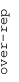
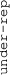

These results are also available as PDF and EPS documents.
Depending on your display resolution, scrolling or zooming may be necessary.
|  |
| 3 |
| 0 |
| -3 |
|  |
| GO:1903779 regulation of cardiac conduction | |||||||||||
| GO:0004683 calmodulin-dependent protein kinase activity | |||||||||||
| GO:0060314 regulation of ryanodine-sensitive calcium-release channel activity | |||||||||||
| GO:0048870 cell motility | |||||||||||
| GO:0046934 phosphatidylinositol-4,5-bisphosphate 3-kinase activity | |||||||||||
| GO:0097110 scaffold protein binding | |||||||||||
| GO:0043410 positive regulation of MAPK cascade | |||||||||||
| GO:0030018 Z disc | |||||||||||
| GO:0007140 male meiotic nuclear division | |||||||||||
| GO:0060333 interferon-gamma-mediated signaling pathway | |||||||||||
| GO:0030324 lung development | |||||||||||
| GO:0001618 virus receptor activity | |||||||||||
| GO:0101003 ficolin-1-rich granule membrane | |||||||||||
| GO:0032755 positive regulation of interleukin-6 production | |||||||||||
| GO:0098609 cell-cell adhesion | |||||||||||
| GO:0004861 cyclin-dependent protein serine/threonine kinase inhibitor activity | |||||||||||
| GO:0004222 metalloendopeptidase activity | |||||||||||
| GO:0072593 reactive oxygen species metabolic process | |||||||||||
| GO:0051591 response to cAMP | |||||||||||
| GO:0005604 basement membrane | |||||||||||
| GO:0071356 cellular response to tumor necrosis factor | |||||||||||
| GO:0005178 integrin binding | |||||||||||
| GO:0008305 integrin complex | |||||||||||
| GO:0048786 presynaptic active zone | |||||||||||
| GO:0043235 receptor complex | |||||||||||
| GO:0035987 endodermal cell differentiation | |||||||||||
| GO:0009925 basal plasma membrane | |||||||||||
| GO:0008201 heparin binding | |||||||||||
| GO:0030669 clathrin-coated endocytic vesicle membrane | |||||||||||
| GO:0004896 cytokine receptor activity | |||||||||||
| GO:0008083 growth factor activity | |||||||||||
| GO:0042613 MHC class II protein complex | |||||||||||
| GO:0006968 cellular defense response | |||||||||||
| GO:0032395 MHC class II receptor activity | |||||||||||
| GO:0002504 antigen processing and presentation of peptide or polysaccharide antigen via MHC class II | |||||||||||
| GO:0071223 cellular response to lipoteichoic acid | |||||||||||
| GO:0032693 negative regulation of interleukin-10 production | |||||||||||
| GO:0050707 regulation of cytokine secretion | |||||||||||
| GO:0003341 cilium movement | |||||||||||
| GO:0043395 heparan sulfate proteoglycan binding | |||||||||||
| GO:0050839 cell adhesion molecule binding | |||||||||||
| GO:0008217 regulation of blood pressure | |||||||||||
| GO:0030658 transport vesicle membrane | |||||||||||
| GO:0007157 heterophilic cell-cell adhesion via plasma membrane cell adhesion molecules | |||||||||||
| GO:0014002 astrocyte development | |||||||||||
| GO:0016494 C-X-C chemokine receptor activity | |||||||||||
| GO:0009612 response to mechanical stimulus | |||||||||||
| GO:0031258 lamellipodium membrane | |||||||||||
| GO:0007193 adenylate cyclase-inhibiting G-protein coupled receptor signaling pathway | |||||||||||
| GO:0031514 motile cilium | |||||||||||
| GO:0035725 sodium ion transmembrane transport | |||||||||||
| GO:0030666 endocytic vesicle membrane | |||||||||||
| GO:0006814 sodium ion transport | |||||||||||
| GO:0005041 low-density lipoprotein receptor activity | |||||||||||
| GO:1902476 chloride transmembrane transport | |||||||||||
| GO:0006821 chloride transport | |||||||||||
| GO:0005254 chloride channel activity | |||||||||||
| GO:0015293 symporter activity | |||||||||||
| GO:0042301 phosphate ion binding | |||||||||||
| GO:0007009 plasma membrane organization | |||||||||||
| GO:0005044 scavenger receptor activity | |||||||||||
| GO:0035082 axoneme assembly | |||||||||||
| GO:0060079 excitatory postsynaptic potential | |||||||||||
| GO:0001658 branching involved in ureteric bud morphogenesis | |||||||||||
| GO:0042789 mRNA transcription from RNA polymerase II promoter | |||||||||||
| GO:0004675 transmembrane receptor protein serine/threonine kinase activity | |||||||||||
| GO:0050731 positive regulation of peptidyl-tyrosine phosphorylation | |||||||||||
| GO:0050728 negative regulation of inflammatory response | |||||||||||
| GO:0001540 amyloid-beta binding | |||||||||||
| GO:0030315 T-tubule | |||||||||||
| GO:0050679 positive regulation of epithelial cell proliferation | |||||||||||
| GO:0002102 podosome | |||||||||||
| GO:0042632 cholesterol homeostasis | |||||||||||
| GO:0010718 positive regulation of epithelial to mesenchymal transition | |||||||||||
| GO:0007162 negative regulation of cell adhesion | |||||||||||
| GO:0050796 regulation of insulin secretion | |||||||||||
| GO:0042383 sarcolemma | |||||||||||
| GO:0031093 platelet alpha granule lumen | |||||||||||
| GO:0005912 adherens junction | |||||||||||
| GO:0016042 lipid catabolic process | |||||||||||
| GO:0005518 collagen binding | |||||||||||
| GO:0007160 cell-matrix adhesion | |||||||||||
| GO:0006935 chemotaxis | |||||||||||
| GO:2001237 negative regulation of extrinsic apoptotic signaling pathway | |||||||||||
| GO:0010977 negative regulation of neuron projection development | |||||||||||
| GO:0009653 anatomical structure morphogenesis | |||||||||||
| GO:0045766 positive regulation of angiogenesis | |||||||||||
| GO:0071407 cellular response to organic cyclic compound | |||||||||||
| GO:0071901 negative regulation of protein serine/threonine kinase activity | |||||||||||
| GO:0007179 transforming growth factor beta receptor signaling pathway | |||||||||||
| GO:0043542 endothelial cell migration | |||||||||||
| GO:0032715 negative regulation of interleukin-6 production | |||||||||||
| GO:0031295 T cell costimulation | |||||||||||
| GO:0015485 cholesterol binding | |||||||||||
| GO:0051607 defense response to virus | |||||||||||
| GO:0030330 DNA damage response, signal transduction by p53 class mediator | |||||||||||
| GO:2000036 regulation of stem cell population maintenance | |||||||||||
| GO:0012507 ER to Golgi transport vesicle membrane | |||||||||||
| GO:0000079 regulation of cyclin-dependent protein serine/threonine kinase activity | |||||||||||
| GO:0030672 synaptic vesicle membrane | |||||||||||
| GO:0031143 pseudopodium | |||||||||||
| GO:0030041 actin filament polymerization | |||||||||||
| GO:0045787 positive regulation of cell cycle | |||||||||||
| GO:0030855 epithelial cell differentiation | |||||||||||
| GO:0043202 lysosomal lumen | |||||||||||
| GO:0032720 negative regulation of tumor necrosis factor production | |||||||||||
| GO:0050766 positive regulation of phagocytosis | |||||||||||
| GO:1904724 tertiary granule lumen | |||||||||||
| GO:0005903 brush border | |||||||||||
| GO:0042088 T-helper 1 type immune response | |||||||||||
| GO:0042605 peptide antigen binding | |||||||||||
| GO:0022409 positive regulation of cell-cell adhesion | |||||||||||
| GO:0050873 brown fat cell differentiation | |||||||||||
| GO:0071236 cellular response to antibiotic | |||||||||||
| GO:0042612 MHC class I protein complex | |||||||||||
| GO:0071556 integral component of lumenal side of endoplasmic reticulum membrane | |||||||||||
| GO:0043393 regulation of protein binding | |||||||||||
| GO:0032495 response to muramyl dipeptide | |||||||||||
| GO:0019882 antigen processing and presentation | |||||||||||
| GO:0006027 glycosaminoglycan catabolic process | |||||||||||
| GO:0005031 tumor necrosis factor-activated receptor activity | |||||||||||
| GO:0034587 piRNA metabolic process | |||||||||||
| GO:0019955 cytokine binding | |||||||||||
| GO:0060337 type I interferon signaling pathway | |||||||||||
| GO:0043491 protein kinase B signaling | |||||||||||
| GO:0001786 phosphatidylserine binding | |||||||||||
| GO:0033598 mammary gland epithelial cell proliferation | |||||||||||
| GO:0035580 specific granule lumen | |||||||||||
| GO:0006936 muscle contraction | |||||||||||
| GO:0050840 extracellular matrix binding | |||||||||||
| GO:0019838 growth factor binding | |||||||||||
| GO:0043198 dendritic shaft | |||||||||||
| GO:0010951 negative regulation of endopeptidase activity | |||||||||||
| GO:0004866 endopeptidase inhibitor activity | |||||||||||
| GO:0007517 muscle organ development | |||||||||||
| GO:0035116 embryonic hindlimb morphogenesis | |||||||||||
| GO:0006813 potassium ion transport | |||||||||||
| GO:0008076 voltage-gated potassium channel complex | |||||||||||
| GO:0030215 semaphorin receptor binding | |||||||||||
| GO:0045861 negative regulation of proteolysis | |||||||||||
| GO:0003735 structural constituent of ribosome | |||||||||||
| GO:0006413 translational initiation | |||||||||||
| GO:0019083 viral transcription | |||||||||||
| GO:0022625 cytosolic large ribosomal subunit | |||||||||||
| GO:0000184 nuclear-transcribed mRNA catabolic process, nonsense-mediated decay | |||||||||||
| GO:0002181 cytoplasmic translation | |||||||||||
| GO:2000059 negative regulation of protein ubiquitination involved in ubiquitin-dependent protein catabolic process | |||||||||||
| GO:0071712 ER-associated misfolded protein catabolic process | |||||||||||
| GO:0015935 small ribosomal subunit | |||||||||||
| GO:0008121 ubiquinol-cytochrome-c reductase activity | |||||||||||
| GO:0006013 mannose metabolic process | |||||||||||
| GO:0006614 SRP-dependent cotranslational protein targeting to membrane | |||||||||||
| GO:0022627 cytosolic small ribosomal subunit | |||||||||||
| GO:0015991 ATP hydrolysis coupled proton transport | |||||||||||
| GO:0031334 positive regulation of protein complex assembly | |||||||||||
| GO:0008097 5S rRNA binding | |||||||||||
| GO:0030374 ligand-dependent nuclear receptor transcription coactivator activity | |||||||||||
| GO:0009060 aerobic respiration | |||||||||||
| GO:0006783 heme biosynthetic process | |||||||||||
| GO:0032418 lysosome localization | |||||||||||
| GO:0006119 oxidative phosphorylation | |||||||||||
| GO:0071550 death-inducing signaling complex assembly | |||||||||||
| GO:0001510 RNA methylation | |||||||||||
| GO:0000028 ribosomal small subunit assembly | |||||||||||
| GO:0008173 RNA methyltransferase activity | |||||||||||
| GO:0010457 centriole-centriole cohesion | |||||||||||
| GO:1902902 negative regulation of autophagosome assembly | |||||||||||
| GO:0006506 GPI anchor biosynthetic process | |||||||||||
| GO:0032088 negative regulation of NF-kappaB transcription factor activity | |||||||||||
| GO:0007035 vacuolar acidification | |||||||||||
| GO:0090398 cellular senescence | |||||||||||
| GO:0012506 vesicle membrane | |||||||||||
| GO:0043171 peptide catabolic process | |||||||||||
| GO:0070006 metalloaminopeptidase activity | |||||||||||
| GO:1904667 negative regulation of ubiquitin protein ligase activity | |||||||||||
| GO:0070469 respiratory chain | |||||||||||
| GO:1904380 endoplasmic reticulum mannose trimming | |||||||||||
| GO:0006120 mitochondrial electron transport, NADH to ubiquinone | |||||||||||
| GO:0005747 mitochondrial respiratory chain complex I | |||||||||||
| GO:0008625 extrinsic apoptotic signaling pathway via death domain receptors | |||||||||||
| GO:0043560 insulin receptor substrate binding | |||||||||||
| GO:0000276 mitochondrial proton-transporting ATP synthase complex, coupling factor F(o) | |||||||||||
| GO:0034599 cellular response to oxidative stress | |||||||||||
| GO:0006919 activation of cysteine-type endopeptidase activity involved in apoptotic process | |||||||||||
| GO:0042470 melanosome | |||||||||||
| GO:0033572 transferrin transport | |||||||||||
| GO:0044322 endoplasmic reticulum quality control compartment | |||||||||||
| GO:0046961 proton-transporting ATPase activity, rotational mechanism | |||||||||||
| GO:0001944 vasculature development | |||||||||||
| GO:0006879 cellular iron ion homeostasis | |||||||||||
| GO:0001666 response to hypoxia | |||||||||||
| GO:0042307 positive regulation of protein import into nucleus | |||||||||||
| GO:0006091 generation of precursor metabolites and energy | |||||||||||
| GO:0050690 regulation of defense response to virus by virus | |||||||||||
| GO:0030742 GTP-dependent protein binding | |||||||||||
| GO:0035970 peptidyl-threonine dephosphorylation | |||||||||||
| GO:0045047 protein targeting to ER | |||||||||||
| GO:0097296 activation of cysteine-type endopeptidase activity involved in apoptotic signaling pathway | |||||||||||
| GO:0004177 aminopeptidase activity | |||||||||||
| GO:0048027 mRNA 5'-UTR binding | |||||||||||
| GO:0034244 negative regulation of transcription elongation from RNA polymerase II promoter | |||||||||||
| GO:0048147 negative regulation of fibroblast proliferation | |||||||||||
| GO:0030131 clathrin adaptor complex | |||||||||||
| GO:0042993 positive regulation of transcription factor import into nucleus | |||||||||||
| GO:0032008 positive regulation of TOR signaling | |||||||||||
| GO:0048260 positive regulation of receptor-mediated endocytosis | |||||||||||
| GO:0097191 extrinsic apoptotic signaling pathway | |||||||||||
| GO:0000042 protein targeting to Golgi | |||||||||||
| GO:0030214 hyaluronan catabolic process | |||||||||||
| GO:0030949 positive regulation of vascular endothelial growth factor receptor signaling pathway | |||||||||||
| GO:0008053 mitochondrial fusion | |||||||||||
| GO:0042582 azurophil granule | |||||||||||
| GO:0031406 carboxylic acid binding | |||||||||||
| GO:1901224 positive regulation of NIK/NF-kappaB signaling | |||||||||||
| GO:0034663 endoplasmic reticulum chaperone complex | |||||||||||
| GO:1904354 negative regulation of telomere capping | |||||||||||
| GO:0005787 signal peptidase complex | |||||||||||
| GO:0051787 misfolded protein binding | |||||||||||
| GO:0030123 AP-3 adaptor complex | |||||||||||
| GO:0006914 autophagy | |||||||||||
| GO:0017112 Rab guanyl-nucleotide exchange factor activity | |||||||||||
| GO:0006486 protein glycosylation | |||||||||||
| GO:0046777 protein autophosphorylation | |||||||||||
| GO:0031982 vesicle | |||||||||||
| GO:0006464 cellular protein modification process | |||||||||||
| GO:0030286 dynein complex | |||||||||||
| GO:0050821 protein stabilization | |||||||||||
| GO:0046907 intracellular transport | |||||||||||
| GO:0051865 protein autoubiquitination | |||||||||||
| GO:0090200 positive regulation of release of cytochrome c from mitochondria | |||||||||||
| GO:0007040 lysosome organization | |||||||||||
| GO:0006367 transcription initiation from RNA polymerase II promoter | |||||||||||
| GO:0000979 RNA polymerase II core promoter sequence-specific DNA binding | |||||||||||
| GO:0008360 regulation of cell shape | |||||||||||
| GO:0051259 protein oligomerization | |||||||||||
| GO:0031397 negative regulation of protein ubiquitination | |||||||||||
| GO:0051020 GTPase binding | |||||||||||
| GO:0006487 protein N-linked glycosylation | |||||||||||
| GO:0060996 dendritic spine development | |||||||||||
| GO:0017137 Rab GTPase binding | |||||||||||
| GO:0030659 cytoplasmic vesicle membrane | |||||||||||
| GO:0006887 exocytosis | |||||||||||
| GO:0051321 meiotic cell cycle | |||||||||||
| GO:0071944 cell periphery | |||||||||||
| GO:0022857 transmembrane transporter activity | |||||||||||
| GO:0019900 kinase binding | |||||||||||
| GO:0035264 multicellular organism growth | |||||||||||
| GO:0009058 biosynthetic process | |||||||||||
| GO:0005080 protein kinase C binding | |||||||||||
| GO:0030148 sphingolipid biosynthetic process | |||||||||||
| GO:0071363 cellular response to growth factor stimulus | |||||||||||
| GO:0045773 positive regulation of axon extension | |||||||||||
| GO:0031966 mitochondrial membrane | |||||||||||
| GO:0030968 endoplasmic reticulum unfolded protein response | |||||||||||
| GO:0051059 NF-kappaB binding | |||||||||||
| GO:0030433 ubiquitin-dependent ERAD pathway | |||||||||||
| GO:0016241 regulation of macroautophagy | |||||||||||
| GO:0019003 GDP binding | |||||||||||
| GO:0005793 endoplasmic reticulum-Golgi intermediate compartment | |||||||||||
| GO:0070373 negative regulation of ERK1 and ERK2 cascade | |||||||||||
| GO:0009898 cytoplasmic side of plasma membrane | |||||||||||
| GO:0051603 proteolysis involved in cellular protein catabolic process | |||||||||||
| GO:0010803 regulation of tumor necrosis factor-mediated signaling pathway | |||||||||||
| GO:0043124 negative regulation of I-kappaB kinase/NF-kappaB signaling | |||||||||||
| GO:0000781 chromosome, telomeric region | |||||||||||
| GO:0031490 chromatin DNA binding | |||||||||||
| GO:0045190 isotype switching | |||||||||||
| GO:0000124 SAGA complex | |||||||||||
| GO:0070131 positive regulation of mitochondrial translation | |||||||||||
| GO:0042274 ribosomal small subunit biogenesis | |||||||||||
| GO:2000009 negative regulation of protein localization to cell surface | |||||||||||
| GO:0005753 mitochondrial proton-transporting ATP synthase complex | |||||||||||
| GO:0006402 mRNA catabolic process | |||||||||||
| GO:0032211 negative regulation of telomere maintenance via telomerase | |||||||||||
| GO:0006098 pentose-phosphate shunt | |||||||||||
| GO:0006122 mitochondrial electron transport, ubiquinol to cytochrome c | |||||||||||
| GO:0044548 S100 protein binding | |||||||||||
| GO:0051457 maintenance of protein location in nucleus | |||||||||||
| GO:0015934 large ribosomal subunit | |||||||||||
| GO:0070181 small ribosomal subunit rRNA binding | |||||||||||
| GO:0005885 Arp2/3 protein complex | |||||||||||
| GO:0032435 negative regulation of proteasomal ubiquitin-dependent protein catabolic process | |||||||||||
| GO:0034314 Arp2/3 complex-mediated actin nucleation | |||||||||||
| GO:0030970 retrograde protein transport, ER to cytosol | |||||||||||
| GO:0033138 positive regulation of peptidyl-serine phosphorylation | |||||||||||
| GO:0042776 mitochondrial ATP synthesis coupled proton transport | |||||||||||
| GO:0005750 mitochondrial respiratory chain complex III | |||||||||||
| GO:0030145 manganese ion binding | |||||||||||
| GO:0008630 intrinsic apoptotic signaling pathway in response to DNA damage | |||||||||||
| GO:0032743 positive regulation of interleukin-2 production | |||||||||||
| GO:0040007 growth | |||||||||||
| GO:0051879 Hsp90 protein binding | |||||||||||
| GO:0070300 phosphatidic acid binding | |||||||||||
| GO:0004520 endodeoxyribonuclease activity | |||||||||||
| GO:0032266 phosphatidylinositol-3-phosphate binding | |||||||||||
| GO:0033617 mitochondrial respiratory chain complex IV assembly | |||||||||||
| GO:1902600 hydrogen ion transmembrane transport | |||||||||||
| GO:0019855 calcium channel inhibitor activity | |||||||||||
| GO:2000377 regulation of reactive oxygen species metabolic process | |||||||||||
| GO:0031902 late endosome membrane | |||||||||||
| GO:0005776 autophagosome | |||||||||||
| GO:0034976 response to endoplasmic reticulum stress | |||||||||||
| GO:0031398 positive regulation of protein ubiquitination | |||||||||||
| GO:0032580 Golgi cisterna membrane | |||||||||||
| GO:0043325 phosphatidylinositol-3,4-bisphosphate binding | |||||||||||
| GO:0006979 response to oxidative stress | |||||||||||
| GO:0006469 negative regulation of protein kinase activity | |||||||||||
| GO:0097352 autophagosome maturation | |||||||||||
| GO:1902041 regulation of extrinsic apoptotic signaling pathway via death domain receptors | |||||||||||
| GO:0008375 acetylglucosaminyltransferase activity | |||||||||||
| GO:0009725 response to hormone | |||||||||||
| GO:0035577 azurophil granule membrane | |||||||||||
| GO:0061028 establishment of endothelial barrier | |||||||||||
| GO:0098869 cellular oxidant detoxification | |||||||||||
| GO:0006986 response to unfolded protein | |||||||||||
| GO:0012505 endomembrane system | |||||||||||
| GO:0031338 regulation of vesicle fusion | |||||||||||
| GO:0003950 NAD+ ADP-ribosyltransferase activity | |||||||||||
| GO:0035579 specific granule membrane | |||||||||||
| GO:0043154 negative regulation of cysteine-type endopeptidase activity involved in apoptotic process | |||||||||||
| GO:0030864 cortical actin cytoskeleton | |||||||||||
| GO:0046835 carbohydrate phosphorylation | |||||||||||
| GO:0043169 cation binding | |||||||||||
| GO:0030117 membrane coat | |||||||||||
| GO:0060976 coronary vasculature development | |||||||||||
| GO:0007095 mitotic G2 DNA damage checkpoint | |||||||||||
| GO:0006754 ATP biosynthetic process | |||||||||||
| GO:0097192 extrinsic apoptotic signaling pathway in absence of ligand | |||||||||||
| GO:0030544 Hsp70 protein binding | |||||||||||
| GO:0005977 glycogen metabolic process | |||||||||||
| GO:0030001 metal ion transport | |||||||||||
| GO:0035722 interleukin-12-mediated signaling pathway | |||||||||||
| GO:1905515 non-motile cilium assembly | |||||||||||
| GO:0004175 endopeptidase activity | |||||||||||
| GO:0042733 embryonic digit morphogenesis | |||||||||||
| GO:0016485 protein processing | |||||||||||
| GO:0032947 protein complex scaffold | |||||||||||
| GO:0070584 mitochondrion morphogenesis | |||||||||||
| GO:0043407 negative regulation of MAP kinase activity | |||||||||||
| GO:0005669 transcription factor TFIID complex | |||||||||||
| GO:0042407 cristae formation | |||||||||||
| GO:0016126 sterol biosynthetic process | |||||||||||
| GO:0015078 hydrogen ion transmembrane transporter activity | |||||||||||
| GO:0030663 COPI-coated vesicle membrane | |||||||||||
| GO:0071108 protein K48-linked deubiquitination | |||||||||||
| GO:0090383 phagosome acidification | |||||||||||
| GO:0019774 proteasome core complex, beta-subunit complex | |||||||||||
| GO:0045263 proton-transporting ATP synthase complex, coupling factor F(o) | |||||||||||
| GO:0030837 negative regulation of actin filament polymerization | |||||||||||
| GO:0034389 lipid particle organization | |||||||||||
| GO:0005911 cell-cell junction | |||||||||||
| GO:0006874 cellular calcium ion homeostasis | |||||||||||
| GO:0032526 response to retinoic acid | |||||||||||
| GO:0019915 lipid storage | |||||||||||
| GO:0008417 fucosyltransferase activity | |||||||||||
| GO:0001726 ruffle | |||||||||||
| GO:0032588 trans-Golgi network membrane | |||||||||||
| GO:0005902 microvillus | |||||||||||
| GO:0006687 glycosphingolipid metabolic process | |||||||||||
| GO:0009636 response to toxic substance | |||||||||||
| GO:0007568 aging | |||||||||||
| GO:0002576 platelet degranulation | |||||||||||
| GO:0046330 positive regulation of JNK cascade | |||||||||||
| GO:0032355 response to estradiol | |||||||||||
| GO:0014704 intercalated disc | |||||||||||
| GO:0044325 ion channel binding | |||||||||||
| GO:0010033 response to organic substance | |||||||||||
| GO:0006904 vesicle docking involved in exocytosis | |||||||||||
| GO:0030335 positive regulation of cell migration | |||||||||||
| GO:0034097 response to cytokine | |||||||||||
| GO:0030512 negative regulation of transforming growth factor beta receptor signaling pathway | |||||||||||
| GO:0051262 protein tetramerization | |||||||||||
| GO:0048013 ephrin receptor signaling pathway | |||||||||||
| GO:0031090 organelle membrane | |||||||||||
| GO:0007599 hemostasis | |||||||||||
| GO:0030177 positive regulation of Wnt signaling pathway | |||||||||||
| GO:0030218 erythrocyte differentiation | |||||||||||
| GO:0005790 smooth endoplasmic reticulum | |||||||||||
| GO:0046697 decidualization | |||||||||||
| GO:0034612 response to tumor necrosis factor | |||||||||||
| GO:0031402 sodium ion binding | |||||||||||
| GO:0007368 determination of left/right symmetry | |||||||||||
| GO:0097502 mannosylation | |||||||||||
| GO:0034504 protein localization to nucleus | |||||||||||
| GO:0032091 negative regulation of protein binding | |||||||||||
| GO:0006665 sphingolipid metabolic process | |||||||||||
| GO:0055088 lipid homeostasis | |||||||||||
| GO:0001938 positive regulation of endothelial cell proliferation | |||||||||||
| GO:0016328 lateral plasma membrane | |||||||||||
| GO:0009952 anterior/posterior pattern specification | |||||||||||
| GO:0070527 platelet aggregation | |||||||||||
| GO:1903561 extracellular vesicle | |||||||||||
| GO:0005782 peroxisomal matrix | |||||||||||
| GO:0008610 lipid biosynthetic process | |||||||||||
| GO:0015035 protein disulfide oxidoreductase activity | |||||||||||
| GO:0004553 hydrolase activity, hydrolyzing O-glycosyl compounds | |||||||||||
| GO:0009314 response to radiation | |||||||||||
| GO:0043200 response to amino acid | |||||||||||
| GO:0009311 oligosaccharide metabolic process | |||||||||||
| GO:0007015 actin filament organization | |||||||||||
| GO:0036092 phosphatidylinositol-3-phosphate biosynthetic process | |||||||||||
| GO:0016303 1-phosphatidylinositol-3-kinase activity | |||||||||||
| GO:0051216 cartilage development | |||||||||||
| GO:0035578 azurophil granule lumen | |||||||||||
| GO:0031333 negative regulation of protein complex assembly | |||||||||||
| GO:0030670 phagocytic vesicle membrane | |||||||||||
| GO:2001234 negative regulation of apoptotic signaling pathway | |||||||||||
| GO:0042771 intrinsic apoptotic signaling pathway in response to DNA damage by p53 class mediator | |||||||||||
| GO:0051604 protein maturation | |||||||||||
| GO:0015986 ATP synthesis coupled proton transport | |||||||||||
| GO:0046933 proton-transporting ATP synthase activity, rotational mechanism | |||||||||||
| GO:0031589 cell-substrate adhesion | |||||||||||
| GO:0030889 negative regulation of B cell proliferation | |||||||||||
| GO:0046677 response to antibiotic | |||||||||||
| GO:0002474 antigen processing and presentation of peptide antigen via MHC class I | |||||||||||
| GO:0061136 regulation of proteasomal protein catabolic process | |||||||||||
| GO:0004602 glutathione peroxidase activity | |||||||||||
| GO:0045088 regulation of innate immune response | |||||||||||
| GO:0045744 negative regulation of G-protein coupled receptor protein signaling pathway | |||||||||||
| GO:0030008 TRAPP complex | |||||||||||
| GO:0005773 vacuole | |||||||||||
| GO:0009313 oligosaccharide catabolic process | |||||||||||
| GO:0035456 response to interferon-beta | |||||||||||
| GO:0005640 nuclear outer membrane | |||||||||||
| GO:0071158 positive regulation of cell cycle arrest | |||||||||||
| GO:0023026 MHC class II protein complex binding | |||||||||||
| GO:0044853 plasma membrane raft | |||||||||||
| GO:0043122 regulation of I-kappaB kinase/NF-kappaB signaling | |||||||||||
| GO:0002456 T cell mediated immunity | |||||||||||
| GO:0005623 cell | |||||||||||
| GO:0045668 negative regulation of osteoblast differentiation | |||||||||||
| GO:0060425 lung morphogenesis | |||||||||||
| GO:0045445 myoblast differentiation | |||||||||||
| GO:0007585 respiratory gaseous exchange | |||||||||||
| GO:0090575 RNA polymerase II transcription factor complex | |||||||||||
| GO:0030833 regulation of actin filament polymerization | |||||||||||
| GO:0035902 response to immobilization stress | |||||||||||
| GO:0005088 Ras guanyl-nucleotide exchange factor activity | |||||||||||
| GO:0015459 potassium channel regulator activity | |||||||||||
| GO:0007612 learning | |||||||||||
| GO:0016337 single organismal cell-cell adhesion | |||||||||||
| GO:0001707 mesoderm formation | |||||||||||
| GO:0030552 cAMP binding | |||||||||||
| GO:0048593 camera-type eye morphogenesis | |||||||||||
| GO:0048168 regulation of neuronal synaptic plasticity | |||||||||||
| GO:0098911 regulation of ventricular cardiac muscle cell action potential | |||||||||||
| GO:0070555 response to interleukin-1 | |||||||||||
| GO:0045730 respiratory burst | |||||||||||
| GO:0006812 cation transport | |||||||||||
| GO:0048812 neuron projection morphogenesis | |||||||||||
| GO:0060170 ciliary membrane | |||||||||||
| GO:0032570 response to progesterone | |||||||||||
| GO:0017156 calcium ion regulated exocytosis | |||||||||||
| GO:0030027 lamellipodium | |||||||||||
| GO:0006869 lipid transport | |||||||||||
| GO:0005801 cis-Golgi network | |||||||||||
| GO:0030036 actin cytoskeleton organization | |||||||||||
| GO:0043621 protein self-association | |||||||||||
| GO:0030426 growth cone | |||||||||||
| GO:0019216 regulation of lipid metabolic process | |||||||||||
| GO:0008013 beta-catenin binding | |||||||||||
| GO:0008643 carbohydrate transport | |||||||||||
| GO:0051092 positive regulation of NF-kappaB transcription factor activity | |||||||||||
| GO:0048010 vascular endothelial growth factor receptor signaling pathway | |||||||||||
| GO:0001933 negative regulation of protein phosphorylation | |||||||||||
| GO:0090002 establishment of protein localization to plasma membrane | |||||||||||
| GO:0043001 Golgi to plasma membrane protein transport | |||||||||||
| GO:0032456 endocytic recycling | |||||||||||
| GO:0045177 apical part of cell | |||||||||||
| GO:0051015 actin filament binding | |||||||||||
| GO:0014070 response to organic cyclic compound | |||||||||||
| GO:0005516 calmodulin binding | |||||||||||
| GO:0090630 activation of GTPase activity | |||||||||||
| GO:0065009 regulation of molecular function | |||||||||||
| GO:0002931 response to ischemia | |||||||||||
| GO:0032496 response to lipopolysaccharide | |||||||||||
| GO:0030165 PDZ domain binding | |||||||||||
| GO:0043406 positive regulation of MAP kinase activity | |||||||||||
| GO:0009887 animal organ morphogenesis | |||||||||||
| GO:0032781 positive regulation of ATPase activity | |||||||||||
| GO:0072661 protein targeting to plasma membrane | |||||||||||
| GO:0097190 apoptotic signaling pathway | |||||||||||
| GO:0007411 axon guidance | |||||||||||
| GO:0071277 cellular response to calcium ion | |||||||||||
| GO:0060070 canonical Wnt signaling pathway | |||||||||||
| GO:0030170 pyridoxal phosphate binding | |||||||||||
| GO:0071310 cellular response to organic substance | |||||||||||
| GO:0001934 positive regulation of protein phosphorylation | |||||||||||
| GO:0071456 cellular response to hypoxia | |||||||||||
| GO:0043085 positive regulation of catalytic activity | |||||||||||
| GO:0031594 neuromuscular junction | |||||||||||
| GO:0008144 drug binding | |||||||||||
| GO:0046854 phosphatidylinositol phosphorylation | |||||||||||
| GO:0018108 peptidyl-tyrosine phosphorylation | |||||||||||
| GO:0004713 protein tyrosine kinase activity | |||||||||||
| GO:0043401 steroid hormone mediated signaling pathway | |||||||||||
| GO:0003707 steroid hormone receptor activity | |||||||||||
| GO:0030175 filopodium | |||||||||||
| GO:0006816 calcium ion transport | |||||||||||
| GO:0070588 calcium ion transmembrane transport | |||||||||||
| GO:0030522 intracellular receptor signaling pathway | |||||||||||
| GO:0004879 RNA polymerase II transcription factor activity, ligand-activated sequence-specific DNA binding | |||||||||||
| GO:0098793 presynapse | |||||||||||
| GO:0030307 positive regulation of cell growth | |||||||||||
| GO:0010976 positive regulation of neuron projection development | |||||||||||
| GO:0090004 positive regulation of establishment of protein localization to plasma membrane | |||||||||||
| GO:0008104 protein localization | |||||||||||
| GO:0007266 Rho protein signal transduction | |||||||||||
| GO:0032092 positive regulation of protein binding | |||||||||||
| GO:0023014 signal transduction by protein phosphorylation | |||||||||||
| GO:0048008 platelet-derived growth factor receptor signaling pathway | |||||||||||
| GO:0008081 phosphoric diester hydrolase activity | |||||||||||
| GO:0007169 transmembrane receptor protein tyrosine kinase signaling pathway | |||||||||||
| GO:0048701 embryonic cranial skeleton morphogenesis | |||||||||||
| GO:0007409 axonogenesis | |||||||||||
| GO:0015297 antiporter activity | |||||||||||
| GO:0005164 tumor necrosis factor receptor binding | |||||||||||
| GO:0005385 zinc ion transmembrane transporter activity | |||||||||||
| GO:0007224 smoothened signaling pathway | |||||||||||
| GO:0030900 forebrain development | |||||||||||
| GO:0007229 integrin-mediated signaling pathway | |||||||||||
| GO:0070821 tertiary granule membrane | |||||||||||
| GO:0045071 negative regulation of viral genome replication | |||||||||||
| GO:0016798 hydrolase activity, acting on glycosyl bonds | |||||||||||
| GO:0010575 positive regulation of vascular endothelial growth factor production | |||||||||||
| GO:0005546 phosphatidylinositol-4,5-bisphosphate binding | |||||||||||
| GO:0005544 calcium-dependent phospholipid binding | |||||||||||
| GO:0008277 regulation of G-protein coupled receptor protein signaling pathway | |||||||||||
| GO:0001570 vasculogenesis | |||||||||||
| GO:0071276 cellular response to cadmium ion | |||||||||||
| GO:0043524 negative regulation of neuron apoptotic process | |||||||||||
| GO:0031663 lipopolysaccharide-mediated signaling pathway | |||||||||||
| GO:0035035 histone acetyltransferase binding | |||||||||||
| GO:0022617 extracellular matrix disassembly | |||||||||||
| GO:0042130 negative regulation of T cell proliferation | |||||||||||
| GO:0030203 glycosaminoglycan metabolic process | |||||||||||
| GO:0001891 phagocytic cup | |||||||||||
| GO:0005913 cell-cell adherens junction | |||||||||||
| GO:0045471 response to ethanol | |||||||||||
| GO:0017157 regulation of exocytosis | |||||||||||
| GO:0006928 movement of cell or subcellular component | |||||||||||
| GO:0030667 secretory granule membrane | |||||||||||
| GO:0006909 phagocytosis | |||||||||||
| GO:0030139 endocytic vesicle | |||||||||||
| GO:0016773 phosphotransferase activity, alcohol group as acceptor | |||||||||||
| GO:0009968 negative regulation of signal transduction | |||||||||||
| GO:0061621 canonical glycolysis | |||||||||||
| GO:0099132 ATP hydrolysis coupled cation transmembrane transport | |||||||||||
| GO:0006805 xenobiotic metabolic process | |||||||||||
| GO:0043204 perikaryon | |||||||||||
| GO:0006096 glycolytic process | |||||||||||
| GO:0048306 calcium-dependent protein binding | |||||||||||
| GO:0043197 dendritic spine | |||||||||||
| GO:0040008 regulation of growth | |||||||||||
| GO:0051592 response to calcium ion | |||||||||||
| GO:0001822 kidney development | |||||||||||
| GO:0046718 viral entry into host cell | |||||||||||
| GO:0005506 iron ion binding | |||||||||||
| GO:0006024 glycosaminoglycan biosynthetic process | |||||||||||
| GO:0030509 BMP signaling pathway | |||||||||||
| GO:0006897 endocytosis | |||||||||||
| GO:0031901 early endosome membrane | |||||||||||
| GO:0035019 somatic stem cell population maintenance | |||||||||||
| GO:0032147 activation of protein kinase activity | |||||||||||
| GO:0009791 post-embryonic development | |||||||||||
| GO:0007346 regulation of mitotic cell cycle | |||||||||||
| GO:0005770 late endosome | |||||||||||
| GO:0008654 phospholipid biosynthetic process | |||||||||||
| GO:0032436 positive regulation of proteasomal ubiquitin-dependent protein catabolic process | |||||||||||
| GO:0010506 regulation of autophagy | |||||||||||
| GO:0090502 RNA phosphodiester bond hydrolysis, endonucleolytic | |||||||||||
| GO:0008021 synaptic vesicle | |||||||||||
| GO:0007010 cytoskeleton organization | |||||||||||
| GO:0000149 SNARE binding | |||||||||||
| GO:0015992 proton transport | |||||||||||
| GO:0005758 mitochondrial intermembrane space | |||||||||||
| GO:0032981 mitochondrial respiratory chain complex I assembly | |||||||||||
| GO:0008137 NADH dehydrogenase (ubiquinone) activity | |||||||||||
| GO:0000288 nuclear-transcribed mRNA catabolic process, deadenylation-dependent decay | |||||||||||
| GO:0006517 protein deglycosylation | |||||||||||
| GO:0000266 mitochondrial fission | |||||||||||
| GO:0016226 iron-sulfur cluster assembly | |||||||||||
| GO:0042795 snRNA transcription from RNA polymerase II promoter | |||||||||||
| GO:0016575 histone deacetylation | |||||||||||
| GO:0032465 regulation of cytokinesis | |||||||||||
| GO:1902237 positive regulation of endoplasmic reticulum stress-induced intrinsic apoptotic signaling pathway | |||||||||||
| GO:0035098 ESC/E(Z) complex | |||||||||||
| GO:0005746 mitochondrial respiratory chain | |||||||||||
| GO:0002479 antigen processing and presentation of exogenous peptide antigen via MHC class I, TAP-dependent | |||||||||||
| GO:0000407 pre-autophagosomal structure | |||||||||||
| GO:0045454 cell redox homeostasis | |||||||||||
| GO:1903364 positive regulation of cellular protein catabolic process | |||||||||||
| GO:0030220 platelet formation | |||||||||||
| GO:0000118 histone deacetylase complex | |||||||||||
| GO:2000772 regulation of cellular senescence | |||||||||||
| GO:0017160 Ral GTPase binding | |||||||||||
| GO:0070059 intrinsic apoptotic signaling pathway in response to endoplasmic reticulum stress | |||||||||||
| GO:0045740 positive regulation of DNA replication | |||||||||||
| GO:0030133 transport vesicle | |||||||||||
| GO:0045171 intercellular bridge | |||||||||||
| GO:0006892 post-Golgi vesicle-mediated transport | |||||||||||
| GO:0007029 endoplasmic reticulum organization | |||||||||||
| GO:0034058 endosomal vesicle fusion | |||||||||||
| GO:0005875 microtubule associated complex | |||||||||||
| GO:0018146 keratan sulfate biosynthetic process | |||||||||||
| GO:0006661 phosphatidylinositol biosynthetic process | |||||||||||
| GO:0061077 chaperone-mediated protein folding | |||||||||||
| GO:0007569 cell aging | |||||||||||
| GO:0005665 DNA-directed RNA polymerase II, core complex | |||||||||||
| GO:0004438 phosphatidylinositol-3-phosphatase activity | |||||||||||
| GO:0019843 rRNA binding | |||||||||||
| GO:0000242 pericentriolar material | |||||||||||
| GO:0060765 regulation of androgen receptor signaling pathway | |||||||||||
| GO:0060334 regulation of interferon-gamma-mediated signaling pathway | |||||||||||
| GO:0060544 regulation of necroptotic process | |||||||||||
| GO:0045197 establishment or maintenance of epithelial cell apical/basal polarity | |||||||||||
| GO:0001078 transcriptional repressor activity, RNA polymerase II core promoter proximal region sequence-specific binding | |||||||||||
| GO:0002020 protease binding | |||||||||||
| GO:0009749 response to glucose | |||||||||||
| GO:0030155 regulation of cell adhesion | |||||||||||
| GO:0003785 actin monomer binding | |||||||||||
| GO:0051117 ATPase binding | |||||||||||
| GO:0001932 regulation of protein phosphorylation | |||||||||||
| GO:0004860 protein kinase inhibitor activity | |||||||||||
| GO:0043086 negative regulation of catalytic activity | |||||||||||
| GO:0048208 COPII vesicle coating | |||||||||||
| GO:0006414 translational elongation | |||||||||||
| GO:0033116 endoplasmic reticulum-Golgi intermediate compartment membrane | |||||||||||
| GO:0009615 response to virus | |||||||||||
| GO:0030336 negative regulation of cell migration | |||||||||||
| GO:0071230 cellular response to amino acid stimulus | |||||||||||
| GO:0000188 inactivation of MAPK activity | |||||||||||
| GO:0045862 positive regulation of proteolysis | |||||||||||
| GO:0035869 ciliary transition zone | |||||||||||
| GO:0009117 nucleotide metabolic process | |||||||||||
| GO:0015095 magnesium ion transmembrane transporter activity | |||||||||||
| GO:0007286 spermatid development | |||||||||||
| GO:0055038 recycling endosome membrane | |||||||||||
| GO:0050434 positive regulation of viral transcription | |||||||||||
| GO:0000470 maturation of LSU-rRNA | |||||||||||
| GO:0001671 ATPase activator activity | |||||||||||
| GO:0070273 phosphatidylinositol-4-phosphate binding | |||||||||||
| GO:0071902 positive regulation of protein serine/threonine kinase activity | |||||||||||
| GO:0000049 tRNA binding | |||||||||||
| GO:0030490 maturation of SSU-rRNA | |||||||||||
| GO:0006362 transcription elongation from RNA polymerase I promoter | |||||||||||
| GO:0016592 mediator complex | |||||||||||
| GO:0001104 RNA polymerase II transcription cofactor activity | |||||||||||
| GO:0051402 neuron apoptotic process | |||||||||||
| GO:0006839 mitochondrial transport | |||||||||||
| GO:0007131 reciprocal meiotic recombination | |||||||||||
| GO:0006611 protein export from nucleus | |||||||||||
| GO:0015914 phospholipid transport | |||||||||||
| GO:0030897 HOPS complex | |||||||||||
| GO:0000027 ribosomal large subunit assembly | |||||||||||
| GO:0042809 vitamin D receptor binding | |||||||||||
| GO:0016254 preassembly of GPI anchor in ER membrane | |||||||||||
| GO:0033120 positive regulation of RNA splicing | |||||||||||
| GO:0010510 regulation of acetyl-CoA biosynthetic process from pyruvate | |||||||||||
| GO:0033194 response to hydroperoxide | |||||||||||
| GO:0048568 embryonic organ development | |||||||||||
| GO:0030010 establishment of cell polarity | |||||||||||
| GO:0043981 histone H4-K5 acetylation | |||||||||||
| GO:0043982 histone H4-K8 acetylation | |||||||||||
| GO:2000273 positive regulation of receptor activity | |||||||||||
| GO:0072358 cardiovascular system development | |||||||||||
| GO:0035269 protein O-linked mannosylation | |||||||||||
| GO:0010529 negative regulation of transposition | |||||||||||
| GO:0038096 Fc-gamma receptor signaling pathway involved in phagocytosis | |||||||||||
| GO:0035278 miRNA mediated inhibition of translation | |||||||||||
| GO:1903231 mRNA binding involved in posttranscriptional gene silencing | |||||||||||
| GO:0002377 immunoglobulin production | |||||||||||
| GO:0042571 immunoglobulin complex, circulating | |||||||||||
| GO:0034987 immunoglobulin receptor binding | |||||||||||
| GO:0006910 phagocytosis, recognition | |||||||||||
| GO:0050871 positive regulation of B cell activation | |||||||||||
| GO:0045095 keratin filament | |||||||||||
| GO:0030449 regulation of complement activation | |||||||||||
| GO:0005833 hemoglobin complex | |||||||||||
| GO:0005126 cytokine receptor binding | |||||||||||
| GO:0005132 type I interferon receptor binding | |||||||||||
| GO:0050853 B cell receptor signaling pathway | |||||||||||
| GO:0006956 complement activation | |||||||||||
| GO:0005549 odorant binding | |||||||||||
| GO:0035195 gene silencing by miRNA | |||||||||||
| GO:0050907 detection of chemical stimulus involved in sensory perception | |||||||||||
| GO:1900026 positive regulation of substrate adhesion-dependent cell spreading | |||||||||||
| GO:0001935 endothelial cell proliferation | |||||||||||
| GO:0051493 regulation of cytoskeleton organization | |||||||||||
| GO:0071260 cellular response to mechanical stimulus | |||||||||||
| GO:0000902 cell morphogenesis | |||||||||||
| GO:0051897 positive regulation of protein kinase B signaling | |||||||||||
| GO:0006631 fatty acid metabolic process | |||||||||||
| GO:0007584 response to nutrient | |||||||||||
| GO:0008202 steroid metabolic process | |||||||||||
| GO:0014066 regulation of phosphatidylinositol 3-kinase signaling | |||||||||||
| GO:0001102 RNA polymerase II activating transcription factor binding | |||||||||||
| GO:0035023 regulation of Rho protein signal transduction | |||||||||||
| GO:0005089 Rho guanyl-nucleotide exchange factor activity | |||||||||||
| GO:0060348 bone development | |||||||||||
| GO:0098794 postsynapse | |||||||||||
| GO:0034605 cellular response to heat | |||||||||||
| GO:0001501 skeletal system development | |||||||||||
| GO:0019706 protein-cysteine S-palmitoyltransferase activity | |||||||||||
| GO:0045022 early endosome to late endosome transport | |||||||||||
| GO:0071222 cellular response to lipopolysaccharide | |||||||||||
| GO:0008584 male gonad development | |||||||||||
| GO:0046332 SMAD binding | |||||||||||
| GO:0030334 regulation of cell migration | |||||||||||
| GO:0032760 positive regulation of tumor necrosis factor production | |||||||||||
| GO:0045648 positive regulation of erythrocyte differentiation | |||||||||||
| GO:0006094 gluconeogenesis | |||||||||||
| GO:0043277 apoptotic cell clearance | |||||||||||
| GO:0030511 positive regulation of transforming growth factor beta receptor signaling pathway | |||||||||||
| GO:0002755 MyD88-dependent toll-like receptor signaling pathway | |||||||||||
| GO:0043388 positive regulation of DNA binding | |||||||||||
| GO:0009617 response to bacterium | |||||||||||
| GO:0034446 substrate adhesion-dependent cell spreading | |||||||||||
| GO:0090316 positive regulation of intracellular protein transport | |||||||||||
| GO:0008237 metallopeptidase activity | |||||||||||
| GO:0060021 palate development | |||||||||||
| GO:0005681 spliceosomal complex | |||||||||||
| GO:0003684 damaged DNA binding | |||||||||||
| GO:0007080 mitotic metaphase plate congression | |||||||||||
| GO:0036297 interstrand cross-link repair | |||||||||||
| GO:0000082 G1/S transition of mitotic cell cycle | |||||||||||
| GO:0051973 positive regulation of telomerase activity | |||||||||||
| GO:0071013 catalytic step 2 spliceosome | |||||||||||
| GO:0016925 protein sumoylation | |||||||||||
| GO:0007077 mitotic nuclear envelope disassembly | |||||||||||
| GO:1900034 regulation of cellular response to heat | |||||||||||
| GO:0007052 mitotic spindle organization | |||||||||||
| GO:0006376 mRNA splice site selection | |||||||||||
| GO:0043657 host cell | |||||||||||
| GO:0075733 intracellular transport of virus | |||||||||||
| GO:0006139 nucleobase-containing compound metabolic process | |||||||||||
| GO:0007062 sister chromatid cohesion | |||||||||||
| GO:0010494 cytoplasmic stress granule | |||||||||||
| GO:0090307 mitotic spindle assembly | |||||||||||
| GO:0051028 mRNA transport | |||||||||||
| GO:0006606 protein import into nucleus | |||||||||||
| GO:0000775 chromosome, centromeric region | |||||||||||
| GO:0000776 kinetochore | |||||||||||
| GO:0000777 condensed chromosome kinetochore | |||||||||||
| GO:0006110 regulation of glycolytic process | |||||||||||
| GO:0000278 mitotic cell cycle | |||||||||||
| GO:0045739 positive regulation of DNA repair | |||||||||||
| GO:0042787 protein ubiquitination involved in ubiquitin-dependent protein catabolic process | |||||||||||
| GO:0003725 double-stranded RNA binding | |||||||||||
| GO:0005720 nuclear heterochromatin | |||||||||||
| GO:0006275 regulation of DNA replication | |||||||||||
| GO:0006303 double-strand break repair via nonhomologous end joining | |||||||||||
| GO:0034080 CENP-A containing nucleosome assembly | |||||||||||
| GO:0000228 nuclear chromosome | |||||||||||
| GO:0048026 positive regulation of mRNA splicing, via spliceosome | |||||||||||
| GO:0042769 DNA damage response, detection of DNA damage | |||||||||||
| GO:0006352 DNA-templated transcription, initiation | |||||||||||
| GO:0006270 DNA replication initiation | |||||||||||
| GO:0016573 histone acetylation | |||||||||||
| GO:0006446 regulation of translational initiation | |||||||||||
| GO:0005680 anaphase-promoting complex | |||||||||||
| GO:0010586 miRNA metabolic process | |||||||||||
| GO:0005876 spindle microtubule | |||||||||||
| GO:0030904 retromer complex | |||||||||||
| GO:0006418 tRNA aminoacylation for protein translation | |||||||||||
| GO:0003724 RNA helicase activity | |||||||||||
| GO:0004535 poly(A)-specific ribonuclease activity | |||||||||||
| GO:0006221 pyrimidine nucleotide biosynthetic process | |||||||||||
| GO:0004726 non-membrane spanning protein tyrosine phosphatase activity | |||||||||||
| GO:2000042 negative regulation of double-strand break repair via homologous recombination | |||||||||||
| GO:0006610 ribosomal protein import into nucleus | |||||||||||
| GO:0031618 nuclear pericentric heterochromatin | |||||||||||
| GO:0032886 regulation of microtubule-based process | |||||||||||
| GO:0003691 double-stranded telomeric DNA binding | |||||||||||
| GO:0071897 DNA biosynthetic process | |||||||||||
| GO:0006913 nucleocytoplasmic transport | |||||||||||
| GO:0003887 DNA-directed DNA polymerase activity | |||||||||||
| GO:0006406 mRNA export from nucleus | |||||||||||
| GO:0006405 RNA export from nucleus | |||||||||||
| GO:0000375 RNA splicing, via transesterification reactions | |||||||||||
| GO:0017101 aminoacyl-tRNA synthetase multienzyme complex | |||||||||||
| GO:1904851 positive regulation of establishment of protein localization to telomere | |||||||||||
| GO:0070933 histone H4 deacetylation | |||||||||||
| GO:0060964 regulation of gene silencing by miRNA | |||||||||||
| GO:0000786 nucleosome | |||||||||||
| GO:0006369 termination of RNA polymerase II transcription | |||||||||||
| GO:0031124 mRNA 3'-end processing | |||||||||||
| GO:0006335 DNA replication-dependent nucleosome assembly | |||||||||||
| GO:0000176 nuclear exosome (RNase complex) | |||||||||||
| GO:0005838 proteasome regulatory particle | |||||||||||
| GO:0072686 mitotic spindle | |||||||||||
| GO:0000070 mitotic sister chromatid segregation | |||||||||||
| GO:0005763 mitochondrial small ribosomal subunit | |||||||||||
| GO:0032200 telomere organization | |||||||||||
| GO:0031616 spindle pole centrosome | |||||||||||
| GO:0048025 negative regulation of mRNA splicing, via spliceosome | |||||||||||
| GO:0005671 Ada2/Gcn5/Ada3 transcription activator complex | |||||||||||
| GO:0006625 protein targeting to peroxisome | |||||||||||
| GO:0000380 alternative mRNA splicing, via spliceosome | |||||||||||
| GO:0032212 positive regulation of telomere maintenance via telomerase | |||||||||||
| GO:0019058 viral life cycle | |||||||||||
| GO:0000815 ESCRT III complex | |||||||||||
| GO:0010458 exit from mitosis | |||||||||||
| GO:0000244 spliceosomal tri-snRNP complex assembly | |||||||||||
| GO:0051290 protein heterotetramerization | |||||||||||
| GO:0000245 spliceosomal complex assembly | |||||||||||
| GO:0000346 transcription export complex | |||||||||||
| GO:0000715 nucleotide-excision repair, DNA damage recognition | |||||||||||
| GO:1902188 positive regulation of viral release from host cell | |||||||||||
| GO:0000779 condensed chromosome, centromeric region | |||||||||||
| GO:0016580 Sin3 complex | |||||||||||
| GO:0042393 histone binding | |||||||||||
| GO:0007031 peroxisome organization | |||||||||||
| GO:0006893 Golgi to plasma membrane transport | |||||||||||
| GO:0000183 chromatin silencing at rDNA | |||||||||||
| GO:0042273 ribosomal large subunit biogenesis | |||||||||||
| GO:0000055 ribosomal large subunit export from nucleus | |||||||||||
| GO:0043486 histone exchange | |||||||||||
| GO:0031491 nucleosome binding | |||||||||||
| GO:0042645 mitochondrial nucleoid | |||||||||||
| GO:0006334 nucleosome assembly | |||||||||||
| GO:0000381 regulation of alternative mRNA splicing, via spliceosome | |||||||||||
| GO:0051256 mitotic spindle midzone assembly | |||||||||||
| GO:0000788 nuclear nucleosome | |||||||||||
| GO:0000339 RNA cap binding | |||||||||||
| GO:0033148 positive regulation of intracellular estrogen receptor signaling pathway | |||||||||||
| GO:0051983 regulation of chromosome segregation | |||||||||||
| GO:0009086 methionine biosynthetic process | |||||||||||
| GO:0071481 cellular response to X-ray | |||||||||||
| GO:1901216 positive regulation of neuron death | |||||||||||
| GO:0031011 Ino80 complex | |||||||||||
| GO:0070932 histone H3 deacetylation | |||||||||||
| GO:0016706 oxidoreductase activity, acting on paired donors, with incorporation or reduction of molecular oxygen, 2-oxoglutarate as one donor, and incorporation of one atom each of oxygen into both donors | |||||||||||
| GO:0006409 tRNA export from nucleus | |||||||||||
| GO:0034399 nuclear periphery | |||||||||||
| GO:0006164 purine nucleotide biosynthetic process | |||||||||||
| GO:0000178 exosome (RNase complex) | |||||||||||
| GO:0051315 attachment of mitotic spindle microtubules to kinetochore | |||||||||||
| GO:1904871 positive regulation of protein localization to Cajal body | |||||||||||
| GO:0042276 error-prone translesion synthesis | |||||||||||
| GO:0070577 lysine-acetylated histone binding | |||||||||||
| GO:0070419 nonhomologous end joining complex | |||||||||||
| GO:0001094 TFIID-class transcription factor binding | |||||||||||
| GO:0043142 single-stranded DNA-dependent ATPase activity | |||||||||||
| GO:0008139 nuclear localization sequence binding | |||||||||||
| GO:0006607 NLS-bearing protein import into nucleus | |||||||||||
| GO:0032154 cleavage furrow | |||||||||||
| GO:0045638 negative regulation of myeloid cell differentiation | |||||||||||
| GO:0006342 chromatin silencing | |||||||||||
| GO:0016788 hydrolase activity, acting on ester bonds | |||||||||||
| GO:0035327 transcriptionally active chromatin | |||||||||||
| GO:0005871 kinesin complex | |||||||||||
| GO:0032467 positive regulation of cytokinesis | |||||||||||
| GO:0005487 nucleocytoplasmic transporter activity | |||||||||||
| GO:0031461 cullin-RING ubiquitin ligase complex | |||||||||||
| GO:0097157 pre-mRNA intronic binding | |||||||||||
| GO:0007017 microtubule-based process | |||||||||||
| GO:0042623 ATPase activity, coupled | |||||||||||
| GO:1901800 positive regulation of proteasomal protein catabolic process | |||||||||||
| GO:0051168 nuclear export | |||||||||||
| GO:0050811 GABA receptor binding | |||||||||||
| GO:0070776 MOZ/MORF histone acetyltransferase complex | |||||||||||
| GO:0005832 chaperonin-containing T-complex | |||||||||||
| GO:0070628 proteasome binding | |||||||||||
| GO:0010971 positive regulation of G2/M transition of mitotic cell cycle | |||||||||||
| GO:0030140 trans-Golgi network transport vesicle | |||||||||||
| GO:0005095 GTPase inhibitor activity | |||||||||||
| GO:0001824 blastocyst development | |||||||||||
| GO:0030371 translation repressor activity | |||||||||||
| GO:0002199 zona pellucida receptor complex | |||||||||||
| GO:0044297 cell body | |||||||||||
| GO:0000159 protein phosphatase type 2A complex | |||||||||||
| GO:0070423 nucleotide-binding oligomerization domain containing signaling pathway | |||||||||||
| GO:0033558 protein deacetylase activity | |||||||||||
| GO:0016538 cyclin-dependent protein serine/threonine kinase regulator activity | |||||||||||
| GO:0006622 protein targeting to lysosome | |||||||||||
| GO:0002223 stimulatory C-type lectin receptor signaling pathway | |||||||||||
| GO:0019827 stem cell population maintenance | |||||||||||
| GO:0005637 nuclear inner membrane | |||||||||||
| GO:0017053 transcriptional repressor complex | |||||||||||
| GO:0045652 regulation of megakaryocyte differentiation | |||||||||||
| GO:0019898 extrinsic component of membrane | |||||||||||
| GO:0010507 negative regulation of autophagy | |||||||||||
| GO:1904837 beta-catenin-TCF complex assembly | |||||||||||
| GO:2001243 negative regulation of intrinsic apoptotic signaling pathway | |||||||||||
| GO:0070403 NAD+ binding | |||||||||||
| GO:0042054 histone methyltransferase activity | |||||||||||
| GO:0090503 RNA phosphodiester bond hydrolysis, exonucleolytic | |||||||||||
| GO:0030332 cyclin binding | |||||||||||
| GO:0046655 folic acid metabolic process | |||||||||||
| GO:0016050 vesicle organization | |||||||||||
| GO:0035690 cellular response to drug | |||||||||||
| GO:0008574 ATP-dependent microtubule motor activity, plus-end-directed | |||||||||||
| GO:0070830 bicellular tight junction assembly | |||||||||||
| GO:0010390 histone monoubiquitination | |||||||||||
| GO:0033523 histone H2B ubiquitination | |||||||||||
| GO:0006497 protein lipidation | |||||||||||
| GO:0030496 midbody | |||||||||||
| GO:0006417 regulation of translation | |||||||||||
| GO:0000289 nuclear-transcribed mRNA poly(A) tail shortening | |||||||||||
| GO:1904115 axon cytoplasm | |||||||||||
| GO:1902036 regulation of hematopoietic stem cell differentiation | |||||||||||
| GO:0017070 U6 snRNA binding | |||||||||||
| GO:0043488 regulation of mRNA stability | |||||||||||
| GO:0045815 positive regulation of gene expression, epigenetic | |||||||||||
| GO:0006626 protein targeting to mitochondrion | |||||||||||
| GO:0043928 exonucleolytic nuclear-transcribed mRNA catabolic process involved in deadenylation-dependent decay | |||||||||||
| GO:0006890 retrograde vesicle-mediated transport, Golgi to ER | |||||||||||
| GO:0000723 telomere maintenance | |||||||||||
| GO:0042162 telomeric DNA binding | |||||||||||
| GO:0006513 protein monoubiquitination | |||||||||||
| GO:0035861 site of double-strand break | |||||||||||
| GO:0005762 mitochondrial large ribosomal subunit | |||||||||||
| GO:0097542 ciliary tip | |||||||||||
| GO:0045814 negative regulation of gene expression, epigenetic | |||||||||||
| GO:0035145 exon-exon junction complex | |||||||||||
| GO:0008250 oligosaccharyltransferase complex | |||||||||||
| GO:0051225 spindle assembly | |||||||||||
| GO:0007020 microtubule nucleation | |||||||||||
| GO:1904357 negative regulation of telomere maintenance via telomere lengthening | |||||||||||
| GO:0030686 90S preribosome | |||||||||||
| GO:2000001 regulation of DNA damage checkpoint | |||||||||||
| GO:0004579 dolichyl-diphosphooligosaccharide-protein glycotransferase activity | |||||||||||
| GO:0061157 mRNA destabilization | |||||||||||
| GO:0006336 DNA replication-independent nucleosome assembly | |||||||||||
| GO:0006401 RNA catabolic process | |||||||||||
| GO:0000784 nuclear chromosome, telomeric region | |||||||||||
| GO:0019013 viral nucleocapsid | |||||||||||
| GO:0000785 chromatin | |||||||||||
| GO:0030150 protein import into mitochondrial matrix | |||||||||||
| GO:0000922 spindle pole | |||||||||||
| GO:0070126 mitochondrial translational termination | |||||||||||
| GO:0070125 mitochondrial translational elongation | |||||||||||
| GO:0005761 mitochondrial ribosome | |||||||||||
| GO:0006283 transcription-coupled nucleotide-excision repair | |||||||||||
| GO:0000910 cytokinesis | |||||||||||
| GO:0051082 unfolded protein binding | |||||||||||
| GO:0032880 regulation of protein localization | |||||||||||
| GO:0003730 mRNA 3'-UTR binding | |||||||||||
| GO:0042147 retrograde transport, endosome to Golgi | |||||||||||
| GO:0007088 regulation of mitotic nuclear division | |||||||||||
| GO:0006895 Golgi to endosome transport | |||||||||||
| GO:0031492 nucleosomal DNA binding | |||||||||||
| GO:0000281 mitotic cytokinesis | |||||||||||
| GO:0007094 mitotic spindle assembly checkpoint | |||||||||||
| GO:0000338 protein deneddylation | |||||||||||
| GO:0035770 ribonucleoprotein granule | |||||||||||
| GO:0043968 histone H2A acetylation | |||||||||||
| GO:0051571 positive regulation of histone H3-K4 methylation | |||||||||||
| GO:1902187 negative regulation of viral release from host cell | |||||||||||
| GO:0031145 anaphase-promoting complex-dependent catabolic process | |||||||||||
| GO:0051437 positive regulation of ubiquitin-protein ligase activity involved in regulation of mitotic cell cycle transition | |||||||||||
| GO:0010972 negative regulation of G2/M transition of mitotic cell cycle | |||||||||||
| GO:0016070 RNA metabolic process | |||||||||||
| GO:0051436 negative regulation of ubiquitin-protein ligase activity involved in mitotic cell cycle | |||||||||||
| GO:0000502 proteasome complex | |||||||||||
| GO:0046540 U4/U6 x U5 tri-snRNP complex | |||||||||||
| GO:0005686 U2 snRNP | |||||||||||
| GO:0030532 small nuclear ribonucleoprotein complex | |||||||||||
| GO:0006388 tRNA splicing, via endonucleolytic cleavage and ligation | |||||||||||
| GO:0035735 intraciliary transport involved in cilium assembly | |||||||||||
| GO:0036258 multivesicular body assembly | |||||||||||
| GO:0000077 DNA damage checkpoint | |||||||||||
| GO:0003954 NADH dehydrogenase activity | |||||||||||
| GO:0034629 cellular protein complex localization | |||||||||||
| GO:0008409 5'-3' exonuclease activity | |||||||||||
| GO:0039702 viral budding via host ESCRT complex | |||||||||||
| GO:0031593 polyubiquitin binding | |||||||||||
| GO:0051233 spindle midzone | |||||||||||
| GO:0000920 cell separation after cytokinesis | |||||||||||
| GO:1990381 ubiquitin-specific protease binding | |||||||||||
| GO:0005868 cytoplasmic dynein complex | |||||||||||
| GO:0008541 proteasome regulatory particle, lid subcomplex | |||||||||||
| GO:0072357 PTW/PP1 phosphatase complex | |||||||||||
| GO:0032968 positive regulation of transcription elongation from RNA polymerase II promoter | |||||||||||
| GO:0043248 proteasome assembly | |||||||||||
| GO:0003831 beta-N-acetylglucosaminylglycopeptide beta-1,4-galactosyltransferase activity | |||||||||||
| GO:0051988 regulation of attachment of spindle microtubules to kinetochore | |||||||||||
| GO:0042788 polysomal ribosome | |||||||||||
| GO:0035613 RNA stem-loop binding | |||||||||||
| GO:0060968 regulation of gene silencing | |||||||||||
| GO:0006353 DNA-templated transcription, termination | |||||||||||
| GO:0008089 anterograde axonal transport | |||||||||||
| GO:0036464 cytoplasmic ribonucleoprotein granule | |||||||||||
| GO:0031497 chromatin assembly | |||||||||||
| GO:0045292 mRNA cis splicing, via spliceosome | |||||||||||
| GO:0036459 thiol-dependent ubiquitinyl hydrolase activity | |||||||||||
| GO:1901796 regulation of signal transduction by p53 class mediator | |||||||||||
| GO:0006457 protein folding | |||||||||||
| GO:0051726 regulation of cell cycle | |||||||||||
| GO:0007005 mitochondrion organization | |||||||||||
| GO:0070530 K63-linked polyubiquitin binding | |||||||||||
| GO:0016236 macroautophagy | |||||||||||
| GO:0015630 microtubule cytoskeleton | |||||||||||
| GO:0004725 protein tyrosine phosphatase activity | |||||||||||
| GO:0035335 peptidyl-tyrosine dephosphorylation | |||||||||||
| GO:0045859 regulation of protein kinase activity | |||||||||||
| GO:0034198 cellular response to amino acid starvation | |||||||||||
| GO:0007254 JNK cascade | |||||||||||
| GO:0000045 autophagosome assembly | |||||||||||
| GO:0006325 chromatin organization | |||||||||||
| GO:0035097 histone methyltransferase complex | |||||||||||
| GO:0044183 protein binding involved in protein folding | |||||||||||
| GO:0030992 intraciliary transport particle B | |||||||||||
| GO:0016791 phosphatase activity | |||||||||||
| GO:0031573 intra-S DNA damage checkpoint | |||||||||||
| GO:0032481 positive regulation of type I interferon production | |||||||||||
| GO:0006289 nucleotide-excision repair | |||||||||||
| GO:0019789 SUMO transferase activity | |||||||||||
| GO:1901998 toxin transport | |||||||||||
| GO:0051537 2 iron, 2 sulfur cluster binding | |||||||||||
| GO:0070182 DNA polymerase binding | |||||||||||
| GO:0080008 Cul4-RING E3 ubiquitin ligase complex | |||||||||||
| GO:0006294 nucleotide-excision repair, preincision complex assembly | |||||||||||
| GO:0000717 nucleotide-excision repair, DNA duplex unwinding | |||||||||||
| GO:0008080 N-acetyltransferase activity | |||||||||||
| GO:0070536 protein K63-linked deubiquitination | |||||||||||
| GO:0017091 AU-rich element binding | |||||||||||
| GO:0031252 cell leading edge | |||||||||||
| GO:0008180 COP9 signalosome | |||||||||||
| GO:0042113 B cell activation | |||||||||||
| GO:0071479 cellular response to ionizing radiation | |||||||||||
| GO:0030014 CCR4-NOT complex | |||||||||||
| GO:0004712 protein serine/threonine/tyrosine kinase activity | |||||||||||
| GO:0030100 regulation of endocytosis | |||||||||||
| GO:0097421 liver regeneration | |||||||||||
| GO:0004709 MAP kinase kinase kinase activity | |||||||||||
| GO:0004843 thiol-dependent ubiquitin-specific protease activity | |||||||||||
| GO:0016197 endosomal transport | |||||||||||
| GO:0008234 cysteine-type peptidase activity | |||||||||||
| GO:0006977 DNA damage response, signal transduction by p53 class mediator resulting in cell cycle arrest | |||||||||||
| GO:0070534 protein K63-linked ubiquitination | |||||||||||
| GO:0006851 mitochondrial calcium ion transmembrane transport | |||||||||||
| GO:0034644 cellular response to UV | |||||||||||
| GO:0090090 negative regulation of canonical Wnt signaling pathway | |||||||||||
| GO:0043525 positive regulation of neuron apoptotic process | |||||||||||
| GO:0016922 ligand-dependent nuclear receptor binding | |||||||||||
| GO:0001047 core promoter binding | |||||||||||
| GO:0045860 positive regulation of protein kinase activity | |||||||||||
| GO:0051219 phosphoprotein binding | |||||||||||
| GO:0032993 protein-DNA complex | |||||||||||
| GO:0009116 nucleoside metabolic process | |||||||||||
| GO:0017025 TBP-class protein binding | |||||||||||
| GO:0030261 chromosome condensation | |||||||||||
| GO:0031597 cytosolic proteasome complex | |||||||||||
| GO:0022624 proteasome accessory complex | |||||||||||
| GO:0008334 histone mRNA metabolic process | |||||||||||
| GO:0005683 U7 snRNP | |||||||||||
| GO:1904874 positive regulation of telomerase RNA localization to Cajal body | |||||||||||
| GO:0005687 U4 snRNP | |||||||||||
| GO:2000114 regulation of establishment of cell polarity | |||||||||||
| GO:0000976 transcription regulatory region sequence-specific DNA binding | |||||||||||
| GO:0004693 cyclin-dependent protein serine/threonine kinase activity | |||||||||||
| GO:0000780 condensed nuclear chromosome, centromeric region | |||||||||||
| GO:0071850 mitotic cell cycle arrest | |||||||||||
| GO:0015075 ion transmembrane transporter activity | |||||||||||
| GO:0047496 vesicle transport along microtubule | |||||||||||
| GO:0030224 monocyte differentiation | |||||||||||
| GO:0006260 DNA replication | |||||||||||
| GO:0010501 RNA secondary structure unwinding | |||||||||||
| GO:0042254 ribosome biogenesis | |||||||||||
| GO:0006296 nucleotide-excision repair, DNA incision, 5'-to lesion | |||||||||||
| GO:0018024 histone-lysine N-methyltransferase activity | |||||||||||
| GO:0006302 double-strand break repair | |||||||||||
| GO:0004812 aminoacyl-tRNA ligase activity | |||||||||||
| GO:0007098 centrosome cycle | |||||||||||
| GO:0019985 translesion synthesis | |||||||||||
| GO:0033683 nucleotide-excision repair, DNA incision | |||||||||||
| GO:0070911 global genome nucleotide-excision repair | |||||||||||
| GO:0097431 mitotic spindle pole | |||||||||||
| GO:0000086 G2/M transition of mitotic cell cycle | |||||||||||
| GO:0003697 single-stranded DNA binding | |||||||||||
| GO:0032452 histone demethylase activity | |||||||||||
| GO:0043966 histone H3 acetylation | |||||||||||
| GO:0000151 ubiquitin ligase complex | |||||||||||
| GO:0005719 nuclear euchromatin | |||||||||||
| GO:0051276 chromosome organization | |||||||||||
| GO:0051298 centrosome duplication | |||||||||||
| GO:0005814 centriole | |||||||||||
| GO:0032543 mitochondrial translation | |||||||||||
| GO:0008536 Ran GTPase binding | |||||||||||
| GO:0043044 ATP-dependent chromatin remodeling | |||||||||||
| GO:0090656 t-circle formation | |||||||||||
| GO:0000460 maturation of 5.8S rRNA | |||||||||||
| GO:0005635 nuclear envelope | |||||||||||
| GO:0042149 cellular response to glucose starvation | |||||||||||
| GO:0051403 stress-activated MAPK cascade | |||||||||||
| GO:0016874 ligase activity | |||||||||||
| GO:0031047 gene silencing by RNA | |||||||||||
| GO:0006396 RNA processing | |||||||||||
| GO:0016779 nucleotidyltransferase activity | |||||||||||
| GO:0004004 ATP-dependent RNA helicase activity | |||||||||||
| GO:0000724 double-strand break repair via homologous recombination | |||||||||||
| GO:0051536 iron-sulfur cluster binding | |||||||||||
| GO:0051539 4 iron, 4 sulfur cluster binding | |||||||||||
| GO:0000083 regulation of transcription involved in G1/S transition of mitotic cell cycle | |||||||||||
| GO:0009451 RNA modification | |||||||||||
| GO:0032434 regulation of proteasomal ubiquitin-dependent protein catabolic process | |||||||||||
| GO:0045116 protein neddylation | |||||||||||
| GO:0006293 nucleotide-excision repair, preincision complex stabilization | |||||||||||
| GO:0006295 nucleotide-excision repair, DNA incision, 3'-to lesion | |||||||||||
| GO:0030521 androgen receptor signaling pathway | |||||||||||
| GO:0051642 centrosome localization | |||||||||||
| GO:0051287 NAD binding | |||||||||||
| GO:0031572 G2 DNA damage checkpoint | |||||||||||
| GO:0031929 TOR signaling | |||||||||||
| GO:0016239 positive regulation of macroautophagy | |||||||||||
| GO:0008565 protein transporter activity | |||||||||||
| GO:1903146 regulation of mitophagy | |||||||||||
| GO:0005847 mRNA cleavage and polyadenylation specificity factor complex | |||||||||||
| GO:0016578 histone deubiquitination | |||||||||||
| GO:0035064 methylated histone binding | |||||||||||
| GO:0051893 regulation of focal adhesion assembly | |||||||||||
| GO:0010369 chromocenter | |||||||||||
| GO:0000177 cytoplasmic exosome (RNase complex) | |||||||||||
| GO:0045727 positive regulation of translation | |||||||||||
| GO:0051721 protein phosphatase 2A binding | |||||||||||
| GO:0005689 U12-type spliceosomal complex | |||||||||||
| GO:0007051 spindle organization | |||||||||||
| GO:0070987 error-free translesion synthesis | |||||||||||
| GO:0048024 regulation of mRNA splicing, via spliceosome | |||||||||||
| GO:0031054 pre-miRNA processing | |||||||||||
| GO:0045653 negative regulation of megakaryocyte differentiation | |||||||||||
| GO:0051439 regulation of ubiquitin-protein ligase activity involved in mitotic cell cycle | |||||||||||
| GO:0001731 formation of translation preinitiation complex | |||||||||||
| GO:0006997 nucleus organization | |||||||||||
| GO:0051170 nuclear import | |||||||||||
| GO:0005685 U1 snRNP | |||||||||||
| GO:0006297 nucleotide-excision repair, DNA gap filling | |||||||||||
| GO:0071004 U2-type prespliceosome | |||||||||||
| GO:0007004 telomere maintenance via telomerase | |||||||||||
| GO:0097194 execution phase of apoptosis | |||||||||||
| GO:0061631 ubiquitin conjugating enzyme activity | |||||||||||
| GO:0034968 histone lysine methylation | |||||||||||
| GO:0005643 nuclear pore | |||||||||||
| GO:0006338 chromatin remodeling | |||||||||||
| GO:0043240 Fanconi anaemia nuclear complex | |||||||||||
| GO:0043276 anoikis | |||||||||||
| GO:0071564 npBAF complex | |||||||||||
| GO:0032201 telomere maintenance via semi-conservative replication | |||||||||||
| GO:0051292 nuclear pore complex assembly | |||||||||||
| GO:0034501 protein localization to kinetochore | |||||||||||
| GO:0007064 mitotic sister chromatid cohesion | |||||||||||
| GO:0000175 3'-5'-exoribonuclease activity | |||||||||||
| GO:0002161 aminoacyl-tRNA editing activity | |||||||||||
| GO:0000447 endonucleolytic cleavage in ITS1 to separate SSU-rRNA from 5.8S rRNA and LSU-rRNA from tricistronic rRNA transcript (SSU-rRNA, 5.8S rRNA, LSU-rRNA) | |||||||||||
| GO:0016407 acetyltransferase activity | |||||||||||
| GO:0030705 cytoskeleton-dependent intracellular transport | |||||||||||
| GO:0017056 structural constituent of nuclear pore | |||||||||||
| GO:0007059 chromosome segregation | |||||||||||
| GO:0071539 protein localization to centrosome | |||||||||||
| GO:0006450 regulation of translational fidelity | |||||||||||
| GO:0006301 postreplication repair | |||||||||||
| GO:0010389 regulation of G2/M transition of mitotic cell cycle | |||||||||||
| GO:0003712 transcription cofactor activity | |||||||||||
| GO:0003899 DNA-directed 5'-3' RNA polymerase activity | |||||||||||
| GO:0070936 protein K48-linked ubiquitination | |||||||||||
| GO:0031369 translation initiation factor binding | |||||||||||
| GO:0003743 translation initiation factor activity | |||||||||||
| GO:0097718 disordered domain specific binding | |||||||||||
| GO:0015030 Cajal body | |||||||||||
| GO:0043022 ribosome binding | |||||||||||
| GO:0000387 spliceosomal snRNP assembly | |||||||||||
| GO:0048490 anterograde synaptic vesicle transport | |||||||||||
| GO:0004402 histone acetyltransferase activity | |||||||||||
| GO:0000462 maturation of SSU-rRNA from tricistronic rRNA transcript (SSU-rRNA, 5.8S rRNA, LSU-rRNA) | |||||||||||
| GO:0000974 Prp19 complex | |||||||||||
| GO:0016558 protein import into peroxisome matrix | |||||||||||
| GO:0006390 transcription from mitochondrial promoter | |||||||||||
| GO:0032039 integrator complex | |||||||||||
| GO:0001056 RNA polymerase III activity | |||||||||||
| GO:0031529 ruffle organization | |||||||||||
| GO:0051382 kinetochore assembly | |||||||||||
| GO:0000075 cell cycle checkpoint | |||||||||||
| GO:0030687 preribosome, large subunit precursor | |||||||||||
| GO:0016180 snRNA processing | |||||||||||
| GO:0005845 mRNA cap binding complex | |||||||||||
| GO:0004527 exonuclease activity | |||||||||||
| GO:0005666 DNA-directed RNA polymerase III complex | |||||||||||
| GO:0005942 phosphatidylinositol 3-kinase complex | |||||||||||
| GO:0008135 translation factor activity, RNA binding | |||||||||||
| GO:0009303 rRNA transcription | |||||||||||
| GO:0015908 fatty acid transport | |||||||||||
| GO:0006415 translational termination | |||||||||||
| GO:0006259 DNA metabolic process | |||||||||||
| GO:0036064 ciliary basal body | |||||||||||
| GO:0019888 protein phosphatase regulator activity | |||||||||||
| GO:0043647 inositol phosphate metabolic process | |||||||||||
| GO:0030866 cortical actin cytoskeleton organization | |||||||||||
| GO:0004386 helicase activity | |||||||||||
| GO:0032040 small-subunit processome | |||||||||||
| GO:0006400 tRNA modification | |||||||||||
| GO:0003678 DNA helicase activity | |||||||||||
| GO:0000956 nuclear-transcribed mRNA catabolic process | |||||||||||
| GO:0051010 microtubule plus-end binding | |||||||||||
| GO:0006337 nucleosome disassembly | |||||||||||
| GO:0005978 glycogen biosynthetic process | |||||||||||
| GO:0031122 cytoplasmic microtubule organization | |||||||||||
| GO:0016616 oxidoreductase activity, acting on the CH-OH group of donors, NAD or NADP as acceptor | |||||||||||
| GO:0097711 ciliary basal body docking | |||||||||||
| GO:0000793 condensed chromosome | |||||||||||
| GO:0003690 double-stranded DNA binding | |||||||||||
| GO:0005667 transcription factor complex | |||||||||||
| GO:0070491 repressing transcription factor binding | |||||||||||
| GO:0045070 positive regulation of viral genome replication | |||||||||||
| GO:0045333 cellular respiration | |||||||||||
| GO:0070412 R-SMAD binding | |||||||||||
| GO:0008652 cellular amino acid biosynthetic process | |||||||||||
| GO:0008408 3'-5' exonuclease activity | |||||||||||
| GO:0036002 pre-mRNA binding | |||||||||||
| GO:0000132 establishment of mitotic spindle orientation | |||||||||||
| GO:0034237 protein kinase A regulatory subunit binding | |||||||||||
| GO:0019001 guanyl nucleotide binding | |||||||||||
| GO:0007264 small GTPase mediated signal transduction | |||||||||||
| GO:0005938 cell cortex | |||||||||||
| GO:0007173 epidermal growth factor receptor signaling pathway | |||||||||||
| GO:0038128 ERBB2 signaling pathway | |||||||||||
| GO:0006656 phosphatidylcholine biosynthetic process | |||||||||||
| GO:0048511 rhythmic process | |||||||||||
| GO:0007018 microtubule-based movement | |||||||||||
| GO:0003777 microtubule motor activity | |||||||||||
| GO:0051090 regulation of sequence-specific DNA binding transcription factor activity | |||||||||||
| GO:0015631 tubulin binding | |||||||||||
| GO:2000145 regulation of cell motility | |||||||||||
| GO:0006950 response to stress | |||||||||||
| GO:0001046 core promoter sequence-specific DNA binding | |||||||||||
| GO:0051056 regulation of small GTPase mediated signal transduction | |||||||||||
| GO:0043087 regulation of GTPase activity | |||||||||||
| GO:0031175 neuron projection development | |||||||||||
| GO:0048487 beta-tubulin binding | |||||||||||
| GO:0045931 positive regulation of mitotic cell cycle | |||||||||||
| GO:0006998 nuclear envelope organization | |||||||||||
| GO:0000981 RNA polymerase II transcription factor activity, sequence-specific DNA binding | |||||||||||
| GO:0046875 ephrin receptor binding | |||||||||||
| GO:0090314 positive regulation of protein targeting to membrane | |||||||||||
| GO:0018107 peptidyl-threonine phosphorylation | |||||||||||
| GO:0070301 cellular response to hydrogen peroxide | |||||||||||
| GO:0009267 cellular response to starvation | |||||||||||
| GO:0060828 regulation of canonical Wnt signaling pathway | |||||||||||
| GO:0002244 hematopoietic progenitor cell differentiation | |||||||||||
| GO:0051496 positive regulation of stress fiber assembly | |||||||||||
| GO:1901215 negative regulation of neuron death | |||||||||||
| GO:0046513 ceramide biosynthetic process | |||||||||||
| GO:0030163 protein catabolic process | |||||||||||
| GO:1990830 cellular response to leukemia inhibitory factor | |||||||||||
| GO:0008333 endosome to lysosome transport | |||||||||||
| GO:0043967 histone H4 acetylation | |||||||||||
| GO:0080025 phosphatidylinositol-3,5-bisphosphate binding | |||||||||||
| GO:0043015 gamma-tubulin binding | |||||||||||
| GO:0071480 cellular response to gamma radiation | |||||||||||
| GO:0032869 cellular response to insulin stimulus | |||||||||||
| GO:0000980 RNA polymerase II distal enhancer sequence-specific DNA binding | |||||||||||
| GO:0021766 hippocampus development | |||||||||||
| GO:0005086 ARF guanyl-nucleotide exchange factor activity | |||||||||||
| GO:0045444 fat cell differentiation | |||||||||||
| GO:0032868 response to insulin | |||||||||||
| GO:0001228 transcriptional activator activity, RNA polymerase II transcription regulatory region sequence-specific binding | |||||||||||
| GO:0045736 negative regulation of cyclin-dependent protein serine/threonine kinase activity | |||||||||||
| GO:0046939 nucleotide phosphorylation | |||||||||||
| GO:0043153 entrainment of circadian clock by photoperiod | |||||||||||
| GO:0048666 neuron development | |||||||||||
| GO:0010498 proteasomal protein catabolic process | |||||||||||
| GO:0006541 glutamine metabolic process | |||||||||||
| GO:0007257 activation of JUN kinase activity | |||||||||||
| GO:0048096 chromatin-mediated maintenance of transcription | |||||||||||
| GO:0072546 ER membrane protein complex | |||||||||||
| GO:0070208 protein heterotrimerization | |||||||||||
| GO:0031023 microtubule organizing center organization | |||||||||||
| GO:0045732 positive regulation of protein catabolic process | |||||||||||
| GO:0010332 response to gamma radiation | |||||||||||
| GO:0006749 glutathione metabolic process | |||||||||||
| GO:0070979 protein K11-linked ubiquitination | |||||||||||
| GO:0031519 PcG protein complex | |||||||||||
| GO:0035371 microtubule plus-end | |||||||||||
| GO:0046329 negative regulation of JNK cascade | |||||||||||
| GO:0070034 telomerase RNA binding | |||||||||||
| GO:0005697 telomerase holoenzyme complex | |||||||||||
| GO:0034719 SMN-Sm protein complex | |||||||||||
| GO:0007281 germ cell development | |||||||||||
| GO:0006750 glutathione biosynthetic process | |||||||||||
| GO:0070063 RNA polymerase binding | |||||||||||
| GO:0008168 methyltransferase activity | |||||||||||
| GO:0008361 regulation of cell size | |||||||||||
| GO:0006378 mRNA polyadenylation | |||||||||||
| GO:0016446 somatic hypermutation of immunoglobulin genes | |||||||||||
| GO:0019005 SCF ubiquitin ligase complex | |||||||||||
| GO:0009083 branched-chain amino acid catabolic process | |||||||||||
| GO:0005675 holo TFIIH complex | |||||||||||
| GO:0008353 RNA polymerase II carboxy-terminal domain kinase activity | |||||||||||
| GO:0010212 response to ionizing radiation | |||||||||||
| GO:0006493 protein O-linked glycosylation | |||||||||||
| GO:0090501 RNA phosphodiester bond hydrolysis | |||||||||||
| GO:0043531 ADP binding | |||||||||||
| GO:1900740 positive regulation of protein insertion into mitochondrial membrane involved in apoptotic signaling pathway | |||||||||||
| GO:0030030 cell projection organization | |||||||||||
| GO:0051289 protein homotetramerization | |||||||||||
| GO:0035091 phosphatidylinositol binding | |||||||||||
| GO:0016829 lyase activity | |||||||||||
| GO:0006461 protein complex assembly | |||||||||||
| GO:0001843 neural tube closure | |||||||||||
| GO:0042110 T cell activation | |||||||||||
| GO:0001782 B cell homeostasis | |||||||||||
| GO:0006888 ER to Golgi vesicle-mediated transport | |||||||||||
| GO:0003729 mRNA binding | |||||||||||
| GO:0017148 negative regulation of translation | |||||||||||
| GO:0030176 integral component of endoplasmic reticulum membrane | |||||||||||
| GO:0008286 insulin receptor signaling pathway | |||||||||||
| GO:0005741 mitochondrial outer membrane | |||||||||||
| GO:0030136 clathrin-coated vesicle | |||||||||||
| GO:0016363 nuclear matrix | |||||||||||
| GO:0006635 fatty acid beta-oxidation | |||||||||||
| GO:0060071 Wnt signaling pathway, planar cell polarity pathway | |||||||||||
| GO:0051087 chaperone binding | |||||||||||
| GO:0043130 ubiquitin binding | |||||||||||
| GO:0007032 endosome organization | |||||||||||
| GO:0032728 positive regulation of interferon-beta production | |||||||||||
| GO:0004197 cysteine-type endopeptidase activity | |||||||||||
| GO:0036498 IRE1-mediated unfolded protein response | |||||||||||
| GO:0050660 flavin adenine dinucleotide binding | |||||||||||
| GO:0047485 protein N-terminus binding | |||||||||||
| GO:1903506 regulation of nucleic acid-templated transcription | |||||||||||
| GO:0007030 Golgi organization | |||||||||||
| GO:0004715 non-membrane spanning protein tyrosine kinase activity | |||||||||||
| GO:0016311 dephosphorylation | |||||||||||
| GO:0005905 clathrin-coated pit | |||||||||||
| GO:0022604 regulation of cell morphogenesis | |||||||||||
| GO:0030097 hemopoiesis | |||||||||||
| GO:0031305 integral component of mitochondrial inner membrane | |||||||||||
| GO:0006006 glucose metabolic process | |||||||||||
| GO:0043280 positive regulation of cysteine-type endopeptidase activity involved in apoptotic process | |||||||||||
| GO:0043123 positive regulation of I-kappaB kinase/NF-kappaB signaling | |||||||||||
| GO:0030331 estrogen receptor binding | |||||||||||
| GO:0043029 T cell homeostasis | |||||||||||
| GO:0033209 tumor necrosis factor-mediated signaling pathway | |||||||||||
| GO:0043209 myelin sheath | |||||||||||
| GO:0017124 SH3 domain binding | |||||||||||
| GO:0042059 negative regulation of epidermal growth factor receptor signaling pathway | |||||||||||
| GO:0032391 photoreceptor connecting cilium | |||||||||||
| GO:0046034 ATP metabolic process | |||||||||||
| GO:0016853 isomerase activity | |||||||||||
| GO:0031463 Cul3-RING ubiquitin ligase complex | |||||||||||
| GO:0019903 protein phosphatase binding | |||||||||||
| GO:0090263 positive regulation of canonical Wnt signaling pathway | |||||||||||
| GO:0005811 lipid particle | |||||||||||
| GO:0030173 integral component of Golgi membrane | |||||||||||
| GO:0090305 nucleic acid phosphodiester bond hydrolysis | |||||||||||
| GO:0004518 nuclease activity | |||||||||||
| GO:0004519 endonuclease activity | |||||||||||
| GO:0042752 regulation of circadian rhythm | |||||||||||
| GO:1903955 positive regulation of protein targeting to mitochondrion | |||||||||||
| GO:0032922 circadian regulation of gene expression | |||||||||||
| GO:0031647 regulation of protein stability | |||||||||||
| GO:1990090 cellular response to nerve growth factor stimulus | |||||||||||
| GO:0003841 1-acylglycerol-3-phosphate O-acyltransferase activity | |||||||||||
| GO:0046328 regulation of JNK cascade | |||||||||||
| GO:0033235 positive regulation of protein sumoylation | |||||||||||
| GO:0008022 protein C-terminus binding | |||||||||||
| GO:0000932 P-body | |||||||||||
| GO:0000226 microtubule cytoskeleton organization | |||||||||||
| GO:0000422 mitophagy | |||||||||||
| GO:0060271 cilium assembly | |||||||||||
| GO:0009055 electron carrier activity | |||||||||||
| GO:0007249 I-kappaB kinase/NF-kappaB signaling | |||||||||||
| GO:0000794 condensed nuclear chromosome | |||||||||||
| GO:0018105 peptidyl-serine phosphorylation | |||||||||||
| GO:0006470 protein dephosphorylation | |||||||||||
| GO:0004721 phosphoprotein phosphatase activity | |||||||||||
| GO:0016605 PML body | |||||||||||
| GO:0000060 protein import into nucleus, translocation | |||||||||||
| GO:0050790 regulation of catalytic activity | |||||||||||
| GO:0015949 nucleobase-containing small molecule interconversion | |||||||||||
| GO:0006383 transcription from RNA polymerase III promoter | |||||||||||
| GO:0051881 regulation of mitochondrial membrane potential | |||||||||||
| GO:0002039 p53 binding | |||||||||||
| GO:0004722 protein serine/threonine phosphatase activity | |||||||||||
| GO:0043014 alpha-tubulin binding | |||||||||||
| GO:1904355 positive regulation of telomere capping | |||||||||||
| GO:0006284 base-excision repair | |||||||||||
| GO:0043021 ribonucleoprotein complex binding | |||||||||||
| GO:0097602 cullin family protein binding | |||||||||||
| GO:0007034 vacuolar transport | |||||||||||
| GO:0031648 protein destabilization | |||||||||||
| GO:0001784 phosphotyrosine residue binding | |||||||||||
| GO:0051291 protein heterooligomerization | |||||||||||
| GO:0012501 programmed cell death | |||||||||||
| GO:0097193 intrinsic apoptotic signaling pathway | |||||||||||
| GO:0001833 inner cell mass cell proliferation | |||||||||||
| GO:0070064 proline-rich region binding | |||||||||||
| GO:0001085 RNA polymerase II transcription factor binding | |||||||||||
| GO:0016279 protein-lysine N-methyltransferase activity | |||||||||||
| GO:0007050 cell cycle arrest | |||||||||||
| GO:0045335 phagocytic vesicle | |||||||||||
| GO:0019886 antigen processing and presentation of exogenous peptide antigen via MHC class II | |||||||||||
| GO:0051213 dioxygenase activity | |||||||||||
| GO:0031072 heat shock protein binding | |||||||||||
| GO:0042826 histone deacetylase binding | |||||||||||
| GO:0021987 cerebral cortex development | |||||||||||
| GO:0001889 liver development | |||||||||||
| GO:0003746 translation elongation factor activity | |||||||||||
| GO:0005085 guanyl-nucleotide exchange factor activity | |||||||||||
| GO:0003774 motor activity | |||||||||||
| GO:0032587 ruffle membrane | |||||||||||
| GO:0008092 cytoskeletal protein binding | |||||||||||
| GO:0019905 syntaxin binding | |||||||||||
| GO:0007623 circadian rhythm | |||||||||||
| GO:0031201 SNARE complex | |||||||||||
| GO:0005484 SNAP receptor activity | |||||||||||
| GO:0001227 transcriptional repressor activity, RNA polymerase II transcription regulatory region sequence-specific binding | |||||||||||
| GO:0005158 insulin receptor binding | |||||||||||
| GO:1904813 ficolin-1-rich granule lumen | |||||||||||
| GO:0016627 oxidoreductase activity, acting on the CH-CH group of donors | |||||||||||
| GO:0034774 secretory granule lumen | |||||||||||
| GO:0035257 nuclear hormone receptor binding | |||||||||||
| GO:0046827 positive regulation of protein export from nucleus | |||||||||||
| GO:0008656 cysteine-type endopeptidase activator activity involved in apoptotic process | |||||||||||
| GO:0070840 dynein complex binding | |||||||||||
| GO:0042073 intraciliary transport | |||||||||||
| GO:0032480 negative regulation of type I interferon production | |||||||||||
| GO:0006996 organelle organization | |||||||||||
| GO:0044877 macromolecular complex binding | |||||||||||
| GO:2000773 negative regulation of cellular senescence | |||||||||||
| GO:0030033 microvillus assembly | |||||||||||
| GO:0000813 ESCRT I complex | |||||||||||
| GO:0016235 aggresome | |||||||||||
| GO:0005777 peroxisome | |||||||||||
| GO:0005778 peroxisomal membrane | |||||||||||
| GO:0035267 NuA4 histone acetyltransferase complex | |||||||||||
| GO:0030126 COPI vesicle coat | |||||||||||
| GO:0007093 mitotic cell cycle checkpoint | |||||||||||
| GO:0005779 integral component of peroxisomal membrane | |||||||||||
| GO:0034452 dynactin binding | |||||||||||
| GO:0006491 N-glycan processing | |||||||||||
| GO:0036500 ATF6-mediated unfolded protein response | |||||||||||
| GO:0010608 posttranscriptional regulation of gene expression | |||||||||||
| GO:0006310 DNA recombination | |||||||||||
| GO:0008023 transcription elongation factor complex | |||||||||||
| GO:0006370 7-methylguanosine mRNA capping | |||||||||||
| GO:0033276 transcription factor TFTC complex | |||||||||||
| GO:0071011 precatalytic spliceosome | |||||||||||
| GO:0006099 tricarboxylic acid cycle | |||||||||||
| GO:0009411 response to UV | |||||||||||
| GO:0009790 embryo development | |||||||||||
| GO:0001103 RNA polymerase II repressing transcription factor binding | |||||||||||
| GO:0030295 protein kinase activator activity | |||||||||||
| GO:0046966 thyroid hormone receptor binding | |||||||||||
| GO:0031434 mitogen-activated protein kinase kinase binding | |||||||||||
| GO:0005657 replication fork | |||||||||||
| GO:0008641 small protein activating enzyme activity | |||||||||||
| GO:0006306 DNA methylation | |||||||||||
| GO:0048188 Set1C/COMPASS complex | |||||||||||
| GO:0061025 membrane fusion | |||||||||||
| GO:0061512 protein localization to cilium | |||||||||||
| GO:0007076 mitotic chromosome condensation | |||||||||||
| GO:0000774 adenyl-nucleotide exchange factor activity | |||||||||||
| GO:0008821 crossover junction endodeoxyribonuclease activity | |||||||||||
| GO:0043162 ubiquitin-dependent protein catabolic process via the multivesicular body sorting pathway | |||||||||||
| GO:0000076 DNA replication checkpoint | |||||||||||
| GO:0042921 glucocorticoid receptor signaling pathway | |||||||||||
| GO:1990126 retrograde transport, endosome to plasma membrane | |||||||||||
| GO:1904264 ubiquitin protein ligase activity involved in ERAD pathway | |||||||||||
| GO:0008198 ferrous iron binding | |||||||||||
| GO:0005852 eukaryotic translation initiation factor 3 complex | |||||||||||
| GO:0071203 WASH complex | |||||||||||
| GO:0048156 tau protein binding | |||||||||||
| GO:0050661 NADP binding | |||||||||||
| GO:0005881 cytoplasmic microtubule | |||||||||||
| GO:0000712 resolution of meiotic recombination intermediates | |||||||||||
| GO:0071044 histone mRNA catabolic process | |||||||||||
| GO:0006312 mitotic recombination | |||||||||||
| GO:0001055 RNA polymerase II activity | |||||||||||
| GO:0034497 protein localization to pre-autophagosomal structure | |||||||||||
| GO:0045786 negative regulation of cell cycle | |||||||||||
| GO:0008156 negative regulation of DNA replication | |||||||||||
| GO:0006368 transcription elongation from RNA polymerase II promoter | |||||||||||
| GO:0038061 NIK/NF-kappaB signaling | |||||||||||
| GO:0005682 U5 snRNP | |||||||||||
| GO:0005844 polysome | |||||||||||
| GO:0004407 histone deacetylase activity | |||||||||||
| GO:0016233 telomere capping | |||||||||||
| GO:0006695 cholesterol biosynthetic process | |||||||||||
| GO:0016601 Rac protein signal transduction | |||||||||||
| GO:0010824 regulation of centrosome duplication | |||||||||||
| GO:0018279 protein N-linked glycosylation via asparagine | |||||||||||
| GO:0036513 Derlin-1 retrotranslocation complex | |||||||||||
| GO:0031146 SCF-dependent proteasomal ubiquitin-dependent protein catabolic process | |||||||||||
| GO:0051560 mitochondrial calcium ion homeostasis | |||||||||||
| GO:0061418 regulation of transcription from RNA polymerase II promoter in response to hypoxia | |||||||||||
| GO:0006521 regulation of cellular amino acid metabolic process | |||||||||||
| GO:0005839 proteasome core complex | |||||||||||
| GO:1901673 regulation of mitotic spindle assembly | |||||||||||
| GO:0034063 stress granule assembly | |||||||||||
| GO:0030071 regulation of mitotic metaphase/anaphase transition | |||||||||||
| GO:0004298 threonine-type endopeptidase activity | |||||||||||
| GO:0051019 mitogen-activated protein kinase binding | |||||||||||
| GO:0034464 BBSome | |||||||||||
| GO:0046856 phosphatidylinositol dephosphorylation | |||||||||||
| GO:0055072 iron ion homeostasis | |||||||||||
| GO:0070742 C2H2 zinc finger domain binding | |||||||||||
| GO:1900182 positive regulation of protein localization to nucleus | |||||||||||
| GO:0007219 Notch signaling pathway | |||||||||||
| GO:0072583 clathrin-dependent endocytosis | |||||||||||
| GO:0045184 establishment of protein localization | |||||||||||
| GO:0051091 positive regulation of sequence-specific DNA binding transcription factor activity | |||||||||||
| GO:0003995 acyl-CoA dehydrogenase activity | |||||||||||
| GO:0031167 rRNA methylation | |||||||||||
| GO:0000975 regulatory region DNA binding | |||||||||||
| GO:0033539 fatty acid beta-oxidation using acyl-CoA dehydrogenase | |||||||||||
| GO:0010821 regulation of mitochondrion organization | |||||||||||
| GO:0006605 protein targeting | |||||||||||
| GO:0006693 prostaglandin metabolic process | |||||||||||
| GO:0042542 response to hydrogen peroxide | |||||||||||
| GO:0030168 platelet activation | |||||||||||
| GO:0005070 SH3/SH2 adaptor activity | |||||||||||
| GO:0009967 positive regulation of signal transduction | |||||||||||
| GO:0005923 bicellular tight junction | |||||||||||
| GO:0005057 signal transducer activity, downstream of receptor | |||||||||||
| GO:0051384 response to glucocorticoid | |||||||||||
| GO:0031532 actin cytoskeleton reorganization | |||||||||||
| GO:0048813 dendrite morphogenesis | |||||||||||
| GO:0006520 cellular amino acid metabolic process | |||||||||||
| GO:0032502 developmental process | |||||||||||
| GO:0031624 ubiquitin conjugating enzyme binding | |||||||||||
| GO:0031307 integral component of mitochondrial outer membrane | |||||||||||
| GO:0006672 ceramide metabolic process | |||||||||||
| GO:0008138 protein tyrosine/serine/threonine phosphatase activity | |||||||||||
| GO:0006829 zinc II ion transport | |||||||||||
| GO:0008203 cholesterol metabolic process | |||||||||||
| GO:0032956 regulation of actin cytoskeleton organization | |||||||||||
| GO:0001664 G-protein coupled receptor binding | |||||||||||
| GO:0001764 neuron migration | |||||||||||
| GO:0051443 positive regulation of ubiquitin-protein transferase activity | |||||||||||
| GO:0000186 activation of MAPKK activity | |||||||||||
| GO:0048536 spleen development | |||||||||||
| GO:0048538 thymus development | |||||||||||
| GO:0006891 intra-Golgi vesicle-mediated transport | |||||||||||
| GO:0005802 trans-Golgi network | |||||||||||
| GO:0003755 peptidyl-prolyl cis-trans isomerase activity | |||||||||||
| GO:0000413 protein peptidyl-prolyl isomerization | |||||||||||
| GO:0071333 cellular response to glucose stimulus | |||||||||||
| GO:0055037 recycling endosome | |||||||||||
| GO:0005884 actin filament | |||||||||||
| GO:0042277 peptide binding | |||||||||||
| GO:0007265 Ras protein signal transduction | |||||||||||
| GO:0021762 substantia nigra development | |||||||||||
| GO:0019902 phosphatase binding | |||||||||||
| GO:0035666 TRIF-dependent toll-like receptor signaling pathway | |||||||||||
| GO:0000187 activation of MAPK activity | |||||||||||
| GO:0031234 extrinsic component of cytoplasmic side of plasma membrane | |||||||||||
| GO:0048015 phosphatidylinositol-mediated signaling | |||||||||||
| GO:0007223 Wnt signaling pathway, calcium modulating pathway | |||||||||||
| GO:0038111 interleukin-7-mediated signaling pathway | |||||||||||
| GO:0010923 negative regulation of phosphatase activity | |||||||||||
| GO:0008543 fibroblast growth factor receptor signaling pathway | |||||||||||
| GO:0033613 activating transcription factor binding | |||||||||||
| GO:0034260 negative regulation of GTPase activity | |||||||||||
| GO:0046686 response to cadmium ion | |||||||||||
| GO:0045742 positive regulation of epidermal growth factor receptor signaling pathway | |||||||||||
| GO:0060548 negative regulation of cell death | |||||||||||
| GO:0001558 regulation of cell growth | |||||||||||
| GO:0051123 RNA polymerase II transcriptional preinitiation complex assembly | |||||||||||
| GO:0071353 cellular response to interleukin-4 | |||||||||||
| GO:0033077 T cell differentiation in thymus | |||||||||||
| GO:0016747 transferase activity, transferring acyl groups other than amino-acyl groups | |||||||||||
| GO:0006090 pyruvate metabolic process | |||||||||||
| GO:0060612 adipose tissue development | |||||||||||
| GO:0005547 phosphatidylinositol-3,4,5-trisphosphate binding | |||||||||||
| GO:0043097 pyrimidine nucleoside salvage | |||||||||||
| GO:1990440 positive regulation of transcription from RNA polymerase II promoter in response to endoplasmic reticulum stress | |||||||||||
| GO:0032041 NAD-dependent histone deacetylase activity (H3-K14 specific) | |||||||||||
| GO:0031100 animal organ regeneration | |||||||||||
| GO:0030099 myeloid cell differentiation | |||||||||||
| GO:0007250 activation of NF-kappaB-inducing kinase activity | |||||||||||
| GO:0043433 negative regulation of sequence-specific DNA binding transcription factor activity | |||||||||||
| GO:1903507 negative regulation of nucleic acid-templated transcription | |||||||||||
| GO:0009409 response to cold | |||||||||||
| GO:0030971 receptor tyrosine kinase binding | |||||||||||
| GO:0007613 memory | |||||||||||
| GO:0070266 necroptotic process | |||||||||||
| GO:0009611 response to wounding | |||||||||||
| GO:0050727 regulation of inflammatory response | |||||||||||
| GO:2001235 positive regulation of apoptotic signaling pathway | |||||||||||
| GO:0003727 single-stranded RNA binding | |||||||||||
| GO:0010165 response to X-ray | |||||||||||
| GO:0010043 response to zinc ion | |||||||||||
| GO:0000993 RNA polymerase II core binding | |||||||||||
| GO:0001106 RNA polymerase II transcription corepressor activity | |||||||||||
| GO:0097546 ciliary base | |||||||||||
| GO:0006361 transcription initiation from RNA polymerase I promoter | |||||||||||
| GO:0006363 termination of RNA polymerase I transcription | |||||||||||
| GO:0000123 histone acetyltransferase complex | |||||||||||
| GO:0032508 DNA duplex unwinding | |||||||||||
| GO:0043484 regulation of RNA splicing | |||||||||||
| GO:0071339 MLL1 complex | |||||||||||
| GO:0071364 cellular response to epidermal growth factor stimulus | |||||||||||
| GO:0019894 kinesin binding | |||||||||||
| GO:0004540 ribonuclease activity | |||||||||||
| GO:0001649 osteoblast differentiation | |||||||||||
| GO:0034614 cellular response to reactive oxygen species | |||||||||||
| GO:0000987 core promoter proximal region sequence-specific DNA binding | |||||||||||
| GO:0017048 Rho GTPase binding | |||||||||||
| GO:0031464 Cul4A-RING E3 ubiquitin ligase complex | |||||||||||
| GO:0090544 BAF-type complex | |||||||||||
| GO:0006730 one-carbon metabolic process | |||||||||||
| GO:0031080 nuclear pore outer ring | |||||||||||
| GO:0034451 centriolar satellite | |||||||||||
| GO:0031267 small GTPase binding | |||||||||||
| GO:0045671 negative regulation of osteoclast differentiation | |||||||||||
| GO:0010035 response to inorganic substance | |||||||||||
| GO:1903351 cellular response to dopamine | |||||||||||
| GO:0048149 behavioral response to ethanol | |||||||||||
| GO:0060338 regulation of type I interferon-mediated signaling pathway | |||||||||||
| GO:0010508 positive regulation of autophagy | |||||||||||
| GO:0048365 Rac GTPase binding | |||||||||||
| GO:0048661 positive regulation of smooth muscle cell proliferation | |||||||||||
| GO:0042593 glucose homeostasis | |||||||||||
| GO:0032729 positive regulation of interferon-gamma production | |||||||||||
| GO:0003007 heart morphogenesis | |||||||||||
| GO:0021915 neural tube development | |||||||||||
| GO:0071320 cellular response to cAMP | |||||||||||
| GO:0035329 hippo signaling | |||||||||||
| GO:0016529 sarcoplasmic reticulum | |||||||||||
| GO:0030501 positive regulation of bone mineralization | |||||||||||
| GO:0045111 intermediate filament cytoskeleton | |||||||||||
| GO:0005901 caveola | |||||||||||
| GO:0072659 protein localization to plasma membrane | |||||||||||
| GO:0005262 calcium channel activity | |||||||||||
| GO:0071560 cellular response to transforming growth factor beta stimulus | |||||||||||
| GO:0048705 skeletal system morphogenesis | |||||||||||
| GO:0009966 regulation of signal transduction | |||||||||||
| GO:0018345 protein palmitoylation | |||||||||||
| GO:0016409 palmitoyltransferase activity | |||||||||||
| GO:0048675 axon extension | |||||||||||
| GO:0005930 axoneme | |||||||||||
| GO:0060325 face morphogenesis | |||||||||||
| GO:0004864 protein phosphatase inhibitor activity | |||||||||||
| GO:0006906 vesicle fusion | |||||||||||
| GO:0030308 negative regulation of cell growth | |||||||||||
| GO:0016049 cell growth | |||||||||||
| GO:0042626 ATPase activity, coupled to transmembrane movement of substances | |||||||||||
| GO:0006479 protein methylation | |||||||||||
| GO:0071889 14-3-3 protein binding | |||||||||||
| GO:0030674 protein binding, bridging | |||||||||||
| GO:0030206 chondroitin sulfate biosynthetic process | |||||||||||
| GO:0097202 activation of cysteine-type endopeptidase activity | |||||||||||
| GO:0043392 negative regulation of DNA binding | |||||||||||
| GO:0042176 regulation of protein catabolic process | |||||||||||
| GO:0042060 wound healing | |||||||||||
| GO:0001725 stress fiber | |||||||||||
| GO:0005543 phospholipid binding | |||||||||||
| GO:0050885 neuromuscular process controlling balance | |||||||||||
| GO:0006637 acyl-CoA metabolic process | |||||||||||
| GO:0006298 mismatch repair | |||||||||||
| GO:0072332 intrinsic apoptotic signaling pathway by p53 class mediator | |||||||||||
| GO:0008033 tRNA processing | |||||||||||
| GO:0001650 fibrillar center | |||||||||||
| GO:0009982 pseudouridine synthase activity | |||||||||||
| GO:0005662 DNA replication factor A complex | |||||||||||
| GO:0045945 positive regulation of transcription from RNA polymerase III promoter | |||||||||||
| GO:0003688 DNA replication origin binding | |||||||||||
| GO:0006359 regulation of transcription from RNA polymerase III promoter | |||||||||||
| GO:0045540 regulation of cholesterol biosynthetic process | |||||||||||
| GO:0030515 snoRNA binding | |||||||||||
| GO:0001522 pseudouridine synthesis | |||||||||||
| GO:0005721 pericentric heterochromatin | |||||||||||
| GO:0031098 stress-activated protein kinase signaling cascade | |||||||||||
| GO:0008094 DNA-dependent ATPase activity | |||||||||||
| GO:0000732 strand displacement | |||||||||||
| GO:0030488 tRNA methylation | |||||||||||
| GO:0031297 replication fork processing | |||||||||||
| GO:0010569 regulation of double-strand break repair via homologous recombination | |||||||||||
| GO:0000400 four-way junction DNA binding | |||||||||||
| GO:0007099 centriole replication | |||||||||||
| GO:0032801 receptor catabolic process | |||||||||||
| GO:0004003 ATP-dependent DNA helicase activity | |||||||||||
| GO:0008266 poly(U) RNA binding | |||||||||||
| GO:0048278 vesicle docking | |||||||||||
| GO:0035326 enhancer binding | |||||||||||
| GO:0035563 positive regulation of chromatin binding | |||||||||||
| GO:0000731 DNA synthesis involved in DNA repair | |||||||||||
| GO:0006488 dolichol-linked oligosaccharide biosynthetic process | |||||||||||
| GO:0006261 DNA-dependent DNA replication | |||||||||||
| GO:0042800 histone methyltransferase activity (H3-K4 specific) | |||||||||||
| GO:0014065 phosphatidylinositol 3-kinase signaling | |||||||||||
| GO:0000729 DNA double-strand break processing | |||||||||||
| GO:0030032 lamellipodium assembly | |||||||||||
| GO:0051568 histone H3-K4 methylation | |||||||||||
| GO:0032006 regulation of TOR signaling | |||||||||||
| GO:0046580 negative regulation of Ras protein signal transduction | |||||||||||
| GO:0071380 cellular response to prostaglandin E stimulus | |||||||||||
| GO:0050681 androgen receptor binding | |||||||||||
| GO:0016571 histone methylation | |||||||||||
| GO:0051959 dynein light intermediate chain binding | |||||||||||
| GO:0042169 SH2 domain binding | |||||||||||
| GO:0006699 bile acid biosynthetic process | |||||||||||
| GO:0008631 intrinsic apoptotic signaling pathway in response to oxidative stress | |||||||||||
| GO:0006241 CTP biosynthetic process | |||||||||||
| GO:0044237 cellular metabolic process | |||||||||||
| GO:0035307 positive regulation of protein dephosphorylation | |||||||||||
| GO:0004550 nucleoside diphosphate kinase activity | |||||||||||
| GO:0043039 tRNA aminoacylation | |||||||||||
| GO:0032206 positive regulation of telomere maintenance | |||||||||||
| GO:0006228 UTP biosynthetic process | |||||||||||
| GO:0008299 isoprenoid biosynthetic process | |||||||||||
| GO:0004526 ribonuclease P activity | |||||||||||
| GO:0030983 mismatched DNA binding | |||||||||||
| GO:0006633 fatty acid biosynthetic process | |||||||||||
| GO:0050999 regulation of nitric-oxide synthase activity | |||||||||||
| GO:0006636 unsaturated fatty acid biosynthetic process | |||||||||||
| GO:0016817 hydrolase activity, acting on acid anhydrides | |||||||||||
| GO:0043596 nuclear replication fork | |||||||||||
| GO:0031932 TORC2 complex | |||||||||||
| GO:0060766 negative regulation of androgen receptor signaling pathway | |||||||||||
| GO:0015074 DNA integration | |||||||||||
| GO:0016514 SWI/SNF complex | |||||||||||
| GO:0071565 nBAF complex | |||||||||||
| GO:0000792 heterochromatin | |||||||||||
| GO:0008026 ATP-dependent helicase activity | |||||||||||
| GO:0006271 DNA strand elongation involved in DNA replication | |||||||||||
| GO:0016818 hydrolase activity, acting on acid anhydrides, in phosphorus-containing anhydrides | |||||||||||
| GO:0018095 protein polyglutamylation | |||||||||||
| GO:0072520 seminiferous tubule development | |||||||||||
| GO:0086091 regulation of heart rate by cardiac conduction | |||||||||||
| GO:0045214 sarcomere organization | |||||||||||
| GO:0031032 actomyosin structure organization | |||||||||||
| GO:0008331 high voltage-gated calcium channel activity | |||||||||||
| GO:0032870 cellular response to hormone stimulus | |||||||||||
| GO:1901379 regulation of potassium ion transmembrane transport | |||||||||||
| GO:0007156 homophilic cell adhesion via plasma membrane adhesion molecules | |||||||||||
| GO:0048286 lung alveolus development | |||||||||||
| GO:0004714 transmembrane receptor protein tyrosine kinase activity | |||||||||||
| GO:0005244 voltage-gated ion channel activity | |||||||||||
| GO:0034765 regulation of ion transmembrane transport | |||||||||||
| GO:0071805 potassium ion transmembrane transport | |||||||||||
| GO:0005267 potassium channel activity | |||||||||||
| GO:0005249 voltage-gated potassium channel activity | |||||||||||
| GO:0005251 delayed rectifier potassium channel activity | |||||||||||
| GO:0015695 organic cation transport | |||||||||||
| GO:0016056 rhodopsin mediated signaling pathway | |||||||||||
| GO:0001759 organ induction | |||||||||||
| GO:1902895 positive regulation of pri-miRNA transcription from RNA polymerase II promoter | |||||||||||
| GO:0007163 establishment or maintenance of cell polarity | |||||||||||
| GO:0001657 ureteric bud development | |||||||||||
| GO:0048704 embryonic skeletal system morphogenesis |